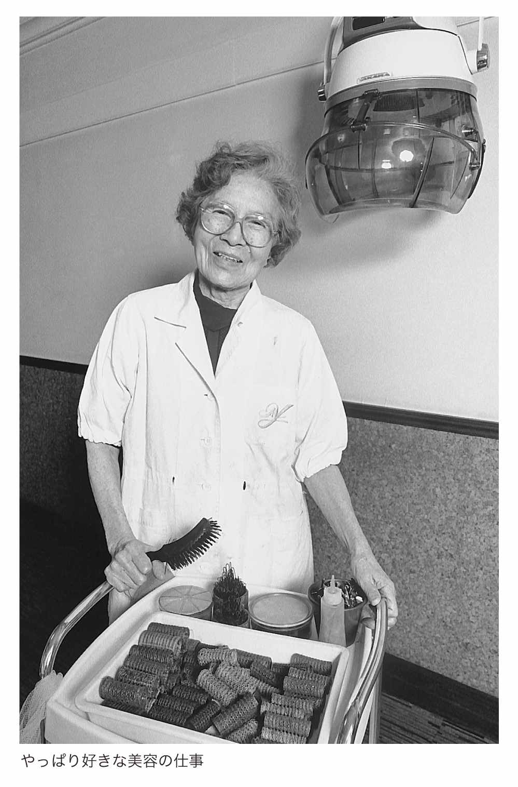

| 「あぐり美容室」とともに 元気の秘訣は、一生懸命と好奇心 (PHP文庫) | |
| 吉行あぐり | |
| PHP研究所 (2005) | |
「あぐり美容室」とともに
元気の秘訣は、一生懸命と好奇心
吉行あぐり
「あぐり美容室」とともに 目次
構成――國安ひろみ
本文写真――著者提供
装丁――江口修平
美容の仕事を始めて、七十余年がすぎました。周りに 担 ぎ上げられて、乗せられて、気がついたらやっていた。そういうわけなんですよ。いやになっちゃうわあ。そんなふうなことも、今頃、やっとわかった次第です。
なんでも、五十年たたないとわからないのね、私って人間は。困ったものです。
父の死から三年余りたった大正十二年のことでした。「吉行さんとこでおまえに来てほしいといいなさるんだよ。身ひとつで来てくれれば、学校も続けさせてくれるというし、行く気はないかね」と母にいわれた私は、それが結婚を意味するとも知らず、「学校を続けられるなら」と二つ返事で承諾しました。
そして、十五歳の春、女学校の四年生で吉行エイスケさんと結婚したのです。
十六歳で長男の淳之介を出産後、新進気鋭の作家だった夫を追って、岡山から上京しました。それまでは、今でいう〝 別居結婚〟 の状態だったのです。常日頃から「髪が多くてうまくまとまらない。なんとかならないかしら」と、美容に興味を持っていた私は、東京で洋髪の先駆者である山野千枝子先生のところへ弟子入りしました。風任せ人生のわりには、これだ！ と自分で思い込むと誰にも相談せずに、思い切って行動に移してしまうたちなのね。
三年間のお礼奉公を経て、エイスケさんに「美容室を建てるから、仕事をしたらいかがですか」といわれたのが昭和四年のことでした。しゅうとが土地を買ってくださったなどとは夢にも思わず、ただただ、すてきな美容室が建ったことがうれしくてねえ。毎日、床をピカピカに磨き、ひたすら仕事に打ち込みました。
一方で、エイスケさんは髪結いの亭主を決め込み、放蕩三昧。今考えてみれば、うまくエイスケさんの策略にはめられたのね。
気がつくと、二年後に銀座の文具百貨店・伊東屋の七階に一軒目の支店を、七年後には岡山市の天満屋という百貨店のなかに二軒目の支店を出しておりました。根っからの職人 気質 の私は、現場一筋でしてね。どんどん仕事を発展させようとか、支店を方々へ持ちたいとか、そういう経営の工夫はなんにもないんです。
「銀座の伊東屋へ美容室を」との話があり、それが銀座の支店になりました。「岡山にデパートが初めてできたから、そこへ美容室を」との話がありましたので、岡山にも支店ができました。万事こんな具合です。
弟子になりたいという方がいると、誰でもはいはい、どうぞといっているうちに、方々に九人ずつくらい増えまして、最盛期には、市ヶ谷の本店と銀座、岡山の支店を合わせると、三十人ぐらいおりました。
そして、昭和十五年です。エイスケさんが突然死。残されたのは三人の子どもとお義母さん、そしてエイスケさんがこしらえた莫大な借金でした。うちもお店も抵当に入っていたのです。びっくりしましたよお。
夫亡きあと、それまでにも増して生活のために、私はただただ働くほかありませんでした。無我夢中で働き、そうこうしているうちに、うちもお店も手元に戻ったようでした。おかしなことに、自分でもいつお店を取り戻せたのか、いつ借金を返し終えたのか、全然思い出せないのです。普通の方はね、もっとちゃんとお考えになって、計画的におやりになるんでしょうけどね。
ようやく取り戻したうちとお店を、今度は戦争で失いました。昭和十九年、市ヶ谷駅から一〇〇メートル以内であるという理由で、お店が建物疎開で壊されてしまったのです。その時は本当につらかったです。
その後、昭和二十年五月、空襲で自宅も焼失してしまいました。
終戦後、疎開先の山梨から戻った私は、「戦争未亡人のために美容を推進する仕事をやりなさい」という山野先生からのお話で、世田谷の戦争未亡人のための美容教習所に雇われて行っておりました。その後、一時、母子寮にも入っておりましたが、やがて、市ヶ谷の焼け跡に、四畳半と六畳とお勝手だけの家を建てました。屋根に瓦もない粗末な家でした。
昭和二十四年、勧めてくださる方があり、新聞社勤務の 復 さんと再婚します。私も四十二歳になっておりました。あちらさんは娘さんが一人、こちらはすでに独立した淳之介を除き、長女・和子と次女・理恵の娘二人。五人の新しい生活が始まりました。
お店を再開できたのは、それからさらに三年後、昭和二十七年のことでした。 さんが知っている建築家の方が、今でいうローンというのを教えてくださいましてね。毎月毎月、お金をお支払いすれば、お店を建てることができるから、その方法で美容室を建てましょうといってくださったの。
建坪七坪ばかりのモルタル造り。規模は小さくなりましたけれど、八年ぶりのわが美容室です。とはいえ、別段、感動もありませんでしたねえ。とにかく市ヶ谷のこの場所で仕事をする。そう運命づけられてるのだろうと思いました。
再婚したとはいえ、 さんはサラリーマンです。私がやりくり下手だったのかもしれませんが、現実には、私が働かなければ子どもたちも生活できませんでしたし、生活は相変わらず大変でした。
お店の再開に際して、名前も「山ノ手美容院」から「吉行あぐり美容室」へと変えることになりました。昔いた弟子も帰ってきてくれまして、昭和五十三年まで二十七年間、営業を続けました。
思い起こせば、昭和の初めから市ヶ谷にいます。八十年近くもいるのです。岡山には十数年しかおりませんでしたから、ここ市ヶ谷は今や第二の故郷のようなものです。
昔むかし、戦後の話です。淳之介が「売ろうよ、売ろうよ。こんなとこ」といったことがありました。戦後がひどうございましたからね。なにしろ、一坪が一円とか二円とかいった時代です。
一坪がいくらでもなんでもいいんですけれど、私はここにいたかったの。「今に地下鉄ができるから。そしたら、きっと土地も高くなるから、その時に売りましょう」とかなんとかいって、言葉を濁して、ひっぱっていたんです。
淳も、本気で売る気はなかったようでした。ですけど、とにかく「こんなとこ、あってもしょうがないから」といってね。私がいやだといえばしょうがないけれど、ちょっと「売ろう」っていってみようかなあ、という調子だったらしいのです。
エイスケさんがいろんなところに借金をして、抵当に入っていたこともありましたし、戦争で強制疎開させられましたこともありました。幾度となく失いかけ、人手に渡りそうになりかけたお店ですが、私としては「ここだけは」というつもりだったのです。
おかげで、今があります。
バブルの少し前の話です。どういういきさつだったんでしょうねえ。いろんな人が、美容室のある場所を「お店をおやめになって、売ってください」とおっしゃってね。当時、私は七十すぎでしたが、「絶対、美容はやめないから、売らない」とがんばってたんですよ。
淳之介も見るにみかねたんでしょうね。「もう仕事おやめになったら？ やめたら、僕が、こづかいくらいあげますよ」と、たびたびいってくれました。年をとった親を、いつまでも働かせておくのはと思ったんでしょう。
でもね、私、男の人からこづかいどころか、生活費もまともにもらったことないんですよ。結婚以来、ずっと働いてまいりましたのでね。
それを、七十をすぎて、いまさらこづかいもらうのなんていやだし、ましてや仕事をやめる気はないと、聞き流しておりましたら、淳之介もとうとうあきらめたのでした。「おふくろさんの場合は、美容師をやっているのが元気のもと。盆栽いじりみたいなもんだ。好きなんだからやりなさい」といってくれました。
そうこうしますうちに、ついに「美容室を残しますから」という条件を出してくださる方がいらっしゃいました。戦後の美容室をいったん店じまい。土地を銀行に貸して、そこにビルが建ちましたので、昭和五十六年、そのなかにテナントとして美容室を入れてもらうことになりました。
自宅は、お店と道を隔てた反対側のマンションに移りました。
あれから、もう二十年以上です。踏ん張ってきたとはいえ、私の場合、全部なりゆきですからねえ。落ちこぼれです。逃げ出すことをしないのは、ただただ鈍感だからなんじゃないでしょうか。泣いても、わめいても、愚痴っても事態がよくなるわけではありませんし、ただ夢中で前を向いて走り続けてきただけなのです。
七十四歳で、また新しい旅立ちの時を迎えました。それまでにも何度かお店を再建してまいりましたが、三度目の正直で、今度は弟子も取らず、たった一人でやることにいたしました。一人だけでお店をやるのが念願だったのです。
のんき者の私ですけれど、こと美容に関しては、人のしている仕事が気になってしょうがありません。シャンプー一つとってもそうです。普通は、インターンという見習の方がお稽古仕事でなさいますが、それがとってもいやなんです。シャンプーというのは、髪にとって、とても大切なことだと思っていますから。
お客様の 御 髪 は初めからおしまいまで自分でしたいんですけれど、人をたくさん使っております時には、そういうわけにもまいりませんでした。
人間関係は大変です。みな、それぞれですからねえ。すぐ「疲れたあ」なんていわれちゃうと、どうしてかしらと思ったりしてしまうんですよね。
床にピンなど落ちますでしょ。それを踏んで歩くのなんて御免ですから、次から次へと、私が拾っちゃうのです。すると、古くからいた弟子が「先生がそういうことなさると、私たちはおちおち座っていられません」と怒るのでした。
ああそうかなあと思いまして、なるべくがまんするんですけどね。ここにピンが落ちているのに、なぜ気がつかないのかしらと、どうしても思っちゃうの。
私のような者と一緒に仕事をするのは、いやだったかもしれませんねえ。大変だったかもしれませんねえ。
そんなこともありまして、いつか一人だけでお店をやってみたいと念願しておりました。
シャンプーからパーマ、カット、セットまで、自分で全部やれれば、こんなしあわせはありません。
ビルが建ちましたので、そのなかに新しい小さな美容室を設け、昔からの馴染みのお客様だけ、予約制で御髪をいじらせていただくことにいたしました。十坪足らずのお店ですが、私一人のかけがえのない城。一人になって、とてもうれしゅうございました。わがままなんでしょうかしら。
一人で仕事をしようと決心しまして、今のような形でお店を始めました頃は、四十人くらいはお客様がいらしたのですが、あれから二十年。今ではついに八人になりました。
お亡くなりになったり、病気でいらっしゃれなくなったり。遠くの老人ホームに入っておしまいになったり。「行きたくても、もうあなたのところへは行かれませんから」とごあいさついただいて、どんどん減っていって、八人だけお残りになりました。
必ず週にいっぺんはいらっしゃる方がお一人いらっしゃるので、その方を含めまして、月に七、八回はやっておりますでしょうか。午前と午後とお二人、いらっしゃる日もあります。
つい十年ほど前までは、一日七、八人させていただいても大丈夫でしたのに、この頃では、一日、お二人くらいがちょうど適当な仕事量だと思います。
一人で仕事をしようと決心した時、私が七十四歳でした。ですから、お客様にも「恐れ入りますが、七十になった方でないと、してさしあげません」と申し上げていたのです。美容院はたくさんございますし、若い方はどこへでもいらっしゃれますからね。
昔、私の美容室にしょっちゅういらした方があるんです。お母様とお嬢様とお二人でいらしていたのですが、当時は、お嬢様もまだお小さかったの。そのお嬢様が、今、六十七歳。入店資格年齢にあとひと息の彼女は、「もうすぐ七十になるから、お店を開けて待ってらして」とおっしゃってくださいますが、そのうち、こっちが死ぬかもしれません。
とにかく、存じ上げている方でないとできないものですから、今までお越しいただきました方だけに奉仕いたしまして、それ以外の方は、どんなにいわれましても、お断りしている次第です。
一番長くいらしてくださる方は、昭和九年からですから、七十年近いおつきあいになります。私よりちょっと年上の九十七歳の奥様です。三十年、五十年と長々、お越しくださるお客様ばかりなものですから、体が動きますうちは、私もお店をやめられません。それにしても、私も長生きしてますねえ。
いつまでやってるのかなあ、そう思いながらやってるの。もうこうなったら、私が死ななくては、終わりが来ないのでしょう。
私が死んでお店がなくなっても、お客様のみなさんは、なんとかなさると思います。なければないで、いなければいないで、世の中、なんとかなるものです。ただ、私もお訪ねいただいている間は、この仕事が私の生き甲斐みたいな気がしましてね。喜んでやらせていただいております。
午前中に仕事がある日は、朝食代わりのくだものをいただいた後、新聞を読むまもなく、お店に向かいます。ご予約いただいた時間の三十分前には、お店に来ます。まず、湯沸し器のガスの元栓をひらき、暑い時はクーラーを入れ、寒い時はヒーターを入れて、お客様のご到着をお待ちします。
作業時間は、シャンプー、セットですと四十分。シャンプーして、カット、セットで、一時間くらいです。パーマをおかけになると、全部し終えるまでに三時間くらいでしょうか。ずいぶん「時間短縮、短縮」といわれていましたけれど、私はどうしても三時間はかかります。
その間は、だいたい立っています。お客様がドライヤーに入っていらっしゃる時は、腰かけていますけどね。
カラーリンスをして、セットすると一時間ちょっとです。カラーリンスの色は、お客様のご要望もありますけれど、なるべく私は自然な色がいいと思うんです。難しいんですよ、そのカラーリンスの色がね。いろいろ色を混ぜて、そのお客様に合った色を作り出しまして、お染めするようにしております。
お客様の数が、もう少ないからでしょうけれど、最近は手が荒れることもなくなりました。シャンプー液もよくなりましたからね。
パーマネントの液も、昔はひどかったのです。昭和初期、外国から取り寄せておりました頃はそうでもなかったんですけれど、昭和十五年頃、日本でも商品ができるようになりましてからは、「これはちょっとすごいなあ」と思いますような出来でした。今は国内の商品でも、不都合はございません。
最近は、そのお店ならではの流儀がないように思います。美容学校を卒業し、美容師になるという順序を踏みますので、どこへ行っても、まず「流行」ありきなのでしょう。流行というと、どんな顔の形の方でも同じ髪型になさいますが、あれが不思議でしょうがないの。お似合いにならないのがわかっているのに、どうしてそういう髪にしてさしあげるのかなあと思いましてね。
私はさしずめ、数十年変わらぬ「あぐりカット」といったところでしょうか。ひと頃は、旧式だと馬鹿にされていた時もありましたけれど、またしばらくすると、「このカット、 流行 ってるんですよね」といわれたりして、おもしろいですよ。流行を追っかけてる人は大変ね。
やっぱり、ご本人に似合った御髪でないとダメだと思うのです。どんなふうにしたらお客様にご満足いただけるだろうか。どんな髪型にしたら、お客様が一番すてきに見えるだろうか。どうしたら美しくしてさしあげられるだろうか。
そんなことばっかり念じて、生きてきました。
一般の美容師さんたちのお値段については、なんにも知りません。十年も前に決めた料金でいつまでも、いつまでもやっておりますとね、「あなた、ちょっとお上げになったら？」と、お客様のほうから少し値上げしてくださいます。
そうかあ、そういうもんかあと思って、ありがたくいただいております。そんな調子です。
心機一転、自分一人だけのお店を開くことにした時に、仕事着を三着、新調いたしました。実は、和子が最初で最後の母の日のプレゼントに、服を作ってくれるというからです。
当時、私が流行遅れの喪服を着ておりましたので、「作ればいいじゃない」といってくれたのですが、喪服はこれで結構。どうやら、次は自分の番だろうからといって、辞退いたしまして、代わりに、白い仕事着を新調したといういきさつです。
今の美容師の方たちは、カラフルですてきな仕事着を着てらっしゃるらしいです。ほかの美容院の方はあんまり知らないんですけれど、でもそうらしいです。昔は、美容師の仕事着は白でなきゃいけなかったんですよ。しかも、手首のところまで隠れていなくてはいけないという決まりがございましたの。
私は、今でも真っ白が好きです。
昭和の初めは、私の洋服を作ってくださる方にお願いして、仕事着も作っていただいておりました。今は、仕事着を専門でお作りになる商売の方がいらっしゃいますからね。それからずっと、同じ人に頼んで、同じデザインのものをあつらえていただいております。
特に「こういうデザインのもの」なんていうのはないんですけれど、だんだん体型が変わってきましたから、昔、着ておりましたものよりかは、体の線が見えないような、ふわっとしたのを着ないとダメになりました。今のゆったりしたデザインのものも動きやすいですよ。
とてもお忙しくしてらっしゃる方は大変でしょうが、私などは今のお店が始まってから、仕事着を作り直したのは三回くらい、五年にいっぺんといったところでしょうか。ただし、一度に三枚くらいは作っております。
最初のうちは、仕事着の洗濯は洗濯屋さんに出していたのですが、やっぱり、めんどくさい人間なのねえ。自分でしたほうが気持ちがいいもんですから、自分で洗って、自分でアイロンをかけています。
昔は、毎日、洗濯しなければなりませんでしたけれど、この頃は仕事をしますのが少しですから、洗濯も大変ではありません。洗濯機がやってくれますしね。
今の布は、アイロンをかけるといっても、簡単です。昔の木綿のものは、きちんとのり付けをしなければきれいに仕上がりませんでしたけれど、今の生地はとてもよくできておりますからねえ。洗ったままでも、よっぽどスパッとなります。
美容師の道具の一つに、はさみがあります。
一つ買えば、はさみは何十年と使えます。今の美容師さんは、はさみも何種類かのものをいろいろと持っていらっしゃると聞きました。私は一丁あれば十分です。
なんていうんでしょうねえ。この品物がいいとなったら、何十年とその質のものを使っています。あんまり研究心がないというのか、がんこなのかしら。
シャンプー剤もその一つです。昔むかし、戦争前、私が美容院を始めました頃に、お知り合いになりましたところから、今もなお届けていただいています。もちろん、今はご担当の方も変わられましたけどね。
もともと化粧品屋さんではなく、化学かなんかやってらした学者さんが、お作りになった会社です。ですから、髪に関する商品だけしか作っていません。まず見本をいただきまして、実際に自分で使ってみまして、これにしようと思って、もう五十年以上。ずっと、同じものを使っています。
普通、美容院はカットやシャンプーをさせていただく以外に、ものを売らなければ、経営上厳しいんですってね。けれど、私は品物を売ることができません。自分で使ってみて、よいと思ったものでないとお勧めできないのです。
そんななか、シャンプーとリンスだけは、自分で使ってとってもいいと思ったので、お店で使うほかに、少しだけ取り置きをいたしまして、欲しいとおっしゃるお客様には分けてさしあげてます。
ひと頃は忙しくしておりましたから、商品もたくさん届けていただきました。この頃は、お客様が少ないので、届けていただくほどでもないんですけれど、ちょっぴりだけでも持ってきてくださるの。ありがたいわね。
はさみやシャンプー同様に、私の美容師生活を半世紀以上にわたって、見守ってきてくれた机があります。昭和二十七年に市ヶ谷にお店を建てて以来のつきあいです。
「待合室の一角に置く机を」と、建築屋さんにお願いして作っていただいたものです。広々としたお店を開業する資力もございませんでしたから、とにかく、お店に合わせたこぢんまりした机をご用意いただいたのでした。
開業後、その机はお会計をする場所として、使っておりました。美容室に変な人が来るなどとは、夢にも思っていなかったのですが、「あとで母が来ますので、ちょっとここで待たせてください」とおっしゃる男の方がいらっしゃいましてね。そのうちに、その人がいなくなったと思ったら、お会計机のなかのものがなくなっていた。そんなことがありました。
へえ、恐ろしいことがあるもんだなあと思いましたけれど、人を疑うなんて、考えたこともなかったですから、びっくりしました。そんな事件の一部始終も、この机はずっと見ていたのね、きっと。
二十年前、自分だけのお店をやろうと決めた時に、業者の方がほかの机をお店に入れてくださったのですが、それを私が気に入らなくて、結局また、古い机を引っ張り出してきて使っております。
考えてみれば、一番長く、私と仕事を共にしてきたのは、この机かしら。従業員の一人みたいな存在ね。
ある美容院で、お客様がいらっしゃると「まあ、いいお召し物ですね」とか「すてきな指輪ですね」とか「いい腕時計をしてらっしゃいますね」とかなんとかいって、お客様をほめていらっしゃる光景を拝見しました。
なるほど。お客様商売というものは、こういうふうにやるものなのかあと、思ったものですが、どうにもそれが私にはできません。私は、お客様がいいお召し物を着てらっしゃっても気がつかないのです。高価な指輪をしてらしても、まったく見てやしないのです。いつも髪のことばっかり見ておりますから、ほめようがないのね。
そういう愛想なしのお店でも、いらしてくださるお客様があります。
お母様とお嬢様、親子二代でいらしてくださる方もいらっしゃいます。お母様は百歳近くまでご健在で、よくいらしてくださいました。そのお母様も亡くなられて、今は、お嬢様がいらしてくださっております。お嬢様といっても、もう八十くらいですけど。
ある人は、お若い時に私のところへしょっちゅう、いらっしゃいましたが、その後、ご結婚なさって、満州へ行ってらっしゃいました。戦後、日本に帰ってらして、以来、ずっと来てくださっている。そういう方もいらっしゃいます。
東京以外から、電車に乗って一時間以上もかけてお越しくださる方もいらっしゃいます。みなさん、ありがたいこと、うれしいです。
千葉からいらしてくださっていた方は、近頃、いらっしゃれなくなりました。電車を使ってお越しくださっていたのですが、いよいよタクシーでないと行かれないということになりましてね。車代が往復三万円くらいかかるのだそうです。そこまでしていらしていただいて、三千円もかからないカットをして、すぐにお帰りになるんですから、あまりに大変だと思います。
私も、「こちらからうかがってあげられるといいんですけど、千葉まで行くのは、私もとてもダメだわ」と思います。相手の方は私よりお若いんですが、とうとう「とても、あなたのところへは行かれない」とおっしゃってね。
お店にいらっしゃれなくなってからも、時々、電話をかけてくださいます。「近所ではやっぱりねえ」とか、ブーブーいってらっしゃいますけれど、そのうちきっと、新しい美容師さんともお互い慣れて、ご満足のできますようになられると思います。
仕事をしている時は、お客様と一対一で、私はもっぱらお話をうかがっております。つつかれれば、何か思い出してお話はできますけれど、自分からはちっともいわない人間らしいのです。自分からいろいろお話しになれるのは、一つの才能だと思います。
そういうことで、私は聞き役一辺倒です。意外に、聞くのは上手らしいのです。ですから、お客様はなんでもお話しくださいまして、「ここへ来ていえば、どこにももれないからいいわ」とおっしゃいます。私も一生懸命、聞いているんですけれど、聞いた話をどなたかに伝えるなど、考えたことがないのです。
イヌやネコのお話を好んでなさる方もいらっしゃいますし、仕事のこと、ご家族のことをお話しになる方もあります。イスにお座りになって、ほんの一時間か二時間、髪を直している間に、ご自分のなかのものを吐きだしていらっしゃるのでしょう。
お話をうかがうのもとてもよい勉強になり、一生懸命、聞いています。
長年、この仕事をいたしておりますと、お店にいらっしゃらなくなっても、どうしてもご縁の切れない方もありますし、もうどんなに「あなたでなきゃ、ダメダメ」とおっしゃっていても、おみえにならなくなる方もいらっしゃいますし、いろいろです。
ご遠方にいらっしゃいます時にごあいさついただいて、「こちらへはあまりに遠くなりましたから、もううかがえません」とおっしゃる方もいらっしゃいますし、そのまんま、お近くにおいででも、いらっしゃらなくなる方もいらっしゃいます。
本当に人間の縁って、不思議よね。
今はもう、お客様としていらっしゃるわけじゃないんですけれど、しょっちゅう私のところへいらしては、二時間ほど、ご自分のいろんな近況をお話しくださる方もいらっしゃいます。
遠路はるばる鎌倉から御茶ノ水まで歯医者さんにいらっしゃる方は、「東京に来たついでだから、あなたの顔を見に行きたい」とおっしゃって、病院の帰りに寄ってくださいます。ありがたいです。
しばらくお出ましがなかったお客様からも、「あなた、どうしてらっしゃる？」と、お電話をいただくこともあります。お気遣いいただいてるの。
でも、自分からお電話すると「私のお店に来てください」といってるみたいで悪いかなあと思いますので、それはできません。黙っていると向こうから「どうしてる？」「お元気？」と、お電話をくださることがあるのです。
お仕事以外の私生活で、お客様からお電話をいただいても、私はどうしても「お友だち」とは思えません。私のなかでは、いつまでも「お客様はお客様」という意識があるのでしょう。美容師さんのなかには、お客様とお友だちのようにおつきあいなさる方もいらっしゃいますけれど、私はそれができないのです。
月に七、八回の営業なんて、これはもう道楽です。でも、考えてみれば、道楽ができるなんて、ありがたいことです。私は、道楽は何もないまま生きてきましたから。本当に、仕事以外に趣味がないのです。懸命に仕事をしていて、そういうことになりました。
このあいだ新聞広告を見ましたら、指編みというのが出ていました。指で何か編物をするらしいのです。これは機械もいらないし、自分の指だけで編むんだから、どんなことするのか知らないけれど、ひとつやってみようかなあと思いましたが、結局、そんなことしている暇はないと思って、やめました。
お金をいただいて美容の仕事をしておりますけれど、現実には、一カ月の収入よりも、お店の管理費や電気代、ガス代などのほうが多くかかります。
年金もいただいております。最初は月五千円だったのですが、今は、もっとくださいます、四万円くらいです。その年金を足しても、収支はやっぱり赤字です。何度かお店を失いかけましたが、それでも自分で仕事を始めましてからこのかた、賃貸という形で家賃を払った経験がありませんから、なんとか今まで続いているのでしょう。
数字のことはさっぱりわからないので、税金のことは、毎年、お願いしている方にやっていただいております。私は確定申告の時に、書付を集めたりするだけです。税理士さんに頼んでいるうちに、たいていはみなさん、ちゃんと覚えておしまいになって、ご自分で申告できるようになるのが当たり前らしいんですけれど、私はダメなんですよ。
美容室の収入なんて、ほとんどございませんから、簡単なんですけどね。なんかごちゃごちゃ、税金のことはわからないでしょ。足し算と引き算と割り算くらいはできますけどね、あとは全然、ダメなんです。私の場合は、世の中に出ても、足し算と引き算と割り算くらいで通用しますよ。
私の弟が数学ができたのですが、そいつが「お姉さんは、数学なんておこがましいよ。あなたのは算術ですよ」と、そういいましたの。いまさらながらに、本当にそうだなあと思っております。
昭和初期は、女の人が手に職をつけるなんて、誰も考えられなかった時代です。私が美容師を始めた時は、親や家族は「大変困った娘だ」と思ったでしょうね。しかし、今にして思えば、私はよかったなあと思います。そうでなかったら、とっくに一家心中でもしてたでしょ、本当。
年をとるにしたがいまして、非常に人間が丸くなりました。自分でも変わったと思います。美容師という仕事につきましたことで、やっぱり成長したのだと思います。もし、家庭のなかにだけいたら、たぶん私は、我が強くて、いやな女になってただろうなあと思います。
生活のためだったとはいえ、ここまで続けているのは、美容の仕事がやっぱり好きだからだと思うのです。転業なんて考えたこともありませんでした。よっぽど好きなのね。

不思議なもので、今もお店へ出てくると、気持ちも体もしゃんとします。うちではヨタヨタヨタヨタしててもね。
正直いって、食事もとる暇なく忙しくしておりました頃は、「美容室をやる人じゃなくって、美容室に行く人になりたかったなあ」などと思ったこともありました。今のように暇になってからでも、あまりに暑かったり、寒かったりしますと、「いやだなあ。ちょっと休みたいなあ」とも思います。
でも、瞬間に思うだけで、体がやっぱりやめないと思います。結局、死ぬまで美容師をやっているんじゃないでしょうか。それで、最後は「あの人、とうとう死んじゃった」ってことになるんだと思うのです。
好きな仕事を、九十四歳の今でもできるというのは、しあわせなことです。なんとか働くことができれば、それが一番。収入は度外視しても、仕事ができれば、それだけでありがたいと思っています。
とにかく、いらしてくださる方があります間は、この仕事をやっているだろうと思います。どなたもいらっしゃらなくなったら、もうこちらもおしまいですしね。
近頃は、あまりにもお客様が少ないものですから、周りが心配しております。いまや、仕事というほどの量ではありませんから、「現役」「現役」といわれると、なんだかおもはゆいくらいです。
「このままで大丈夫ですか」「この状態でお店を出しているのは、もったいないですねえ」「いっそのこと、珈琲屋になさったらどうですか」と、いってくださるよそ様がいるのですが、いまさら、珈琲屋なんていったって、とてもやれっこないし、する気もないのです。美容室だからこそ、こうしてやってるんですから。
でも、普通に考えましたら、赤字続きで、とてもこんなことしちゃいられませんものね。商売替えをしろとおっしゃる方のお気持ちもわかります。
一方で、身内の和子と理恵はよく黙っていると思います。「何をやってんだあ！」と、あの連中からいわれたら、それまでです。でも、なんにもいわないから、よけいいいです。うちの家族は、みんな同じような人間で、欲も得もないのね。
それどころか、娘どもにはいろいろ助けてもらっております。月に数回とはいえ、美容室の掃除もなかなか大変ですからね。数年前までは、お店の掃除は理恵がやってくれていましたけれど、彼女も自分の仕事がありますから、この頃は和子のアシスタントのかわいい坊やにおこづかいをあげて、お手伝いしてもらっています。床のはき掃除からブラシやくしの洗浄まで、とってもきれいにしてくださいます。
そういえば、「あなた、お嬢様が二人いらっしゃるから、どなたか美容室、なさるでしょ？」とおっしゃるお客様がいらして、驚いたことがあります。
いわれてみれば、美容をなさる方でお子さんがいらっしゃる方は、お子さんを普通の学校へおやりになっても、通信教育を受けさせて、高等学校を卒業するまでに美容学校も卒業させて、あとをお継がせになるケースがほとんどなんですね。
このへんに戦前からある美容院で、われわれの組合の方でも、親御さんからお店を引き継いでという方たちがいらっしゃいます。
ところが、どうしたことでしょう。私は娘に仕事を継いでほしいなんて、一度も考えたことがありませんでした。いうまでもなく、彼女たちには彼女たちの人生があるのです。たぶん、あの連中も私の仕事を継ぐなどとは、考えたこともないでしょう。
私はものすごく不器用な人間です。逆説的ですが、だからこそ、美容の仕事もここまで続けてこられたのだと思います。器用な方でしたら、すぐになんでもできちゃって、結婚をなさると仕事をやめておしまいになる方もいらっしゃいますから。
それに比べて、私は一生懸命にやらないとできないものですから、「これで十分」という域になかなか到達しないのです。そのおかげで、今まで仕事が続いているのかもしれません。
お客様が少なくなったとはいえ、おかげさまで私も、今のようなおだやかな時間があります。それでも、時間がなくてなくてと、嘆いています。なにしろ動作がのろいらしく、時間がいくらあっても足りません。
お客様が八人に減って、ちょうどよかったのかもしれませんね。世の中、うまくできています。これも長くやってきたからこそでしょう。
不器用のせいか、しつこい性格のせいか、こうして九十すぎてまで続けていられる仕事があるということは、ありがたいことです。そして、いつかおしまいになる。
美容師に始まり、美容師に終わる。それでいいと思っています。
月に二回、 鍼 に通っています。それと申しますのが、美容師という仕事で、腰を痛めたのです。十何年も前の話です。あっちやらこっちやら、いわゆる整形外科に通いましたけれど、なかなか治りませんでした。
困っている私を見て、当時、お店にいらっしゃったお客様が、医学博士で筑波大学の先生でいらっしゃる長尾先生を紹介してくださいました。筑波大学には、目のご不自由な方のために、鍼やお灸の技術者を養成なさる科があるんだそうです。長尾先生は、そこの先生をしてらっしゃいましてね。筑波大学の診療所が 茗 荷 谷 にございまして、そこへ私も通うことにいたしました。
長尾先生は目がお見えになりません。四つの時に失明なさったんですって。和子より、年はちょっと上だとおっしゃっていました。病気のこと以外でも、何を聞いても知ってらっしゃるので、ちょっと恐れいっちゃいます。
今は定年退職なすってご自宅で開業してらっしゃいますので、私もそちらへまいります。場所は目白台三丁目。田中真紀子さんのおうちがある近くです。
午前中の予約の場合は、家を八時半出発、十一時前に帰宅します。数年前から、先生が「二週間にいっぺんぐらいでいいでしょ」とおっしゃいましたので、通院回数が減りました。
おかげさまで、九十四歳になって、体調がよくなってきたということでしょうか。自分でも、今が一番、体調がいいなあと思います。
鍼の先生のところへは、今までバスで行っていたのですが、和子が「危ないからダメダメ」というので、最近は、彼女の車で送り迎えをしてもらっています。和子について俳優の勉強をしている若い男の子が、車を運転してくれます。なんとガードマンつきの送り迎え。とはいえ、私は荷物みたいなもので、運ばれて行って、運ばれて帰るのです。
和子が忙しくて、私のほうに車が回せない時はしめしめです。彼女は「ぜひタクシーに乗って行ってくださいよ」といいますけれど、これ幸いとバスに乗って、長尾先生のところへ出かけます。バスに乗っていく日は、うきうきしてしまいます。
バス旅行って、いいですよ。バス旅行の快適なことを、長尾先生から教えていただきました。バスは座席の位置が高いですから、外の景色がよく見えます。普通の車に乗っけられると座席が低いでしょ。
うちからですと、途中いっぺんバスを乗り換えまして、目白台三丁目まで行きます。終点は練馬車庫。バスに乗っている時間は、ものの三十分くらいです。
以前は、乗り換えの際に、横断歩道を渡って、道の反対側からバスを乗り継いでおりましたが、長尾先生から、横断歩道を渡らずに、簡単に乗り換えのできるバスルートを教えていただきました。先生は目が見える方より、よっぽどいろんなことをご存じです。私はただただ感服するばかりです。
バスに一回乗ると二百円かかります。乗り換えがありますから、片道四百円。往復だと八百円になります。ある日、長尾先生が「あなた、一日バス券を買えば五百円ですよ」とおっしゃるの。ラクな乗り換えルートに加えて、お得な情報を先生に教えていただいたおかげで、この頃は、一日バス券というのを有効に利用しております。
東京都には、シルバーパスというお年寄り用の割引定期券みたいなものがあります。これはしょっちゅうお使いになる方がお買いになれば得ですけれど、私のようにひと月にいっぺんとか二へんの利用では、一万円くらい払わなきゃいけないんですから、とても値段分、使い切れません。
バスに無料で乗れるお年寄りへのサービスもあるのですが、私は、その恩恵にあずかれません。現役バリバリというわけでもないんですけれど、一応、仕事をしていますし、その他のことでも、私には無料のバス券というのは、出してもらえないのです。
でも、一日バス券があるからいいわね。
バスに乗るのは大好きですが、最近はバス通院もどうかなあと思い始めております。やっぱり、九十すぎますと、七十代、八十代とは違いますよ。自分でもそれはわかります。年とったなあと思います。
というのも、みなさんが、特に女の方が助けてくださるの。よほど、こっちがヨボヨボしているんでしょうねえ。この間もバス停で、杖をついたご婦人の後ろに並んでおりましたら、「お先にどうぞ」と、私をサポートしてくださいました。
いやあ、私は誰が見ても年寄りに見えるんだなあと思いました。ご厚意に甘えて先にバスに乗り込み、しっかりと「ありがとうございます」とお礼をいって、年寄りらしくしておりました。
つい、二、三年前までは、こちらが先にシルバーシートに座っておりましても、前にヨロヨロした方がお立ちになると、すぐに立ちあがって、席を譲っておりました。私より、この方のほうがひょっとしたら若いかもしれないけれど、ヨロヨロしてらっしゃるからダメだなあって。そんなふうに思ってたんですよ。
今はもうあべこべです。なんかかんか、みなさんが世話を焼いてくださることが多くなると、人様に迷惑をかけるようなら、いやでも和子に運ばれなきゃダメかなあと考えたりします。
道路を歩くのも、監視の目が厳しくなりました。ある日の新聞に「交通ルールを守って」という見出しがついた、読者からのお便りが載っておりました。
最近、お年寄りの事故が多くて、その原因は主にお年寄りの側にある。それも、特におばあちゃん。すぐ先に横断歩道があるのに、それを使わず、平気で道路を渡ったり、横断歩道を渡る時でさえ、信号が赤に変わっていても強引に渡る人が多い。これでは、運転手さんが気の毒だ、という投書でした。
まさに、私のこと。警告代わりに、理恵がその投書の部分を切り抜いて、さらに色のついたペンで囲って、私のところへ置いていきました。教訓、たれられちゃった。なかなか、理恵もやりますのよ。
実は、今日も横断歩道を渡らずに、マンションの前の道を横切ってきちゃいました。でも、少し離れた信号の色をちゃんと確認し、赤ですべての車が止まっているのを見届けたうえで、目の前にいたオートバイの人にも「ごめんなさい」と声をかけてから、用心深く渡ってきましたから。
和子と理恵の心配もわかるのですが、「少し先の横断歩道より、ここを」と思ってしまうのです。
このところ、少し太ったかもしれません。背は低くなったのに、体重は五十キロあります。昔から顔が大きいといわれていたんですけれど、近頃、ますます顔が大きくなっちゃって。人間って長く生きてみるものよ。いろんなことを発見します。
若い頃には、過労で入院したり、子宮を摘出したり、大手術もしました。生死の境をさまよい、あの世まで行きかけたこともありました。働きすぎてもいたんだと思います。いつ寝ていたんだろうと思うほど、本当、よく働きましたから。エイスケさんがいる時も、亡くなってからも、さらには さんと再婚してからも、ずっとね。
大黒柱とはいえませんけれど、十代で仕事を始めましてからは、一家の中心になって経済を支えなければならないはめに陥っておりました。女手ひとつ、三人の子どもを抱えて、ただただ夢中で働いていたのです。
仕事一筋で、バカの一つ覚えというところでしょうか。美容の仕事以外、なんにもすることができないんですからねえ。
今が一番ラクです。体はどこも悪くないし、ありがたいですねえ。生前、淳がよくいっていたように、私は「元気という名の病気」なのでしょうか。
夏バテしたという経験もありません。水をたくさん飲み、着物は汗したらすぐ着替えるようにすること。冬は風邪をひいたかなあと思うと、しょっちゅう、うがいをしまして、ひどくならないように気をつけております程度でね。
あとは、朝、一生懸命、歩くこと。歩けなくなったら、もうダメでしょうから。そうなったら、寝ているより、しょうがないですけどねえ。
私がちょっと体調を崩すと、和子や理恵が大騒ぎで、心配します。かわいそうねえ。少しのことでたいそう心配されると、ああ、私は年をとってるんだなあと思います。
毎年、お誕生日の月に健康診断があります。通称「お誕生日検診」です。
千代田区内に指定のお医者様がありまして、そのうちのどこへでもいいから、検診を受けに行ってくださいという通知が、区から届きます。ちなみに、検診は無料です。
その人の誕生月に検診してくれるので、私は七月中に行かなきゃいけません。たまには、お誕生日当日に行こうかなあと思い、前回は七月十日に出かけました。私が行くところは市ヶ谷診療所というところで、わが家のまん前の建物のなかにあります。
昔は、区民検診など、行ったことがありませんでしたけれど、この頃は、一年にいっぺんぐらいは体を診てもらったほうがいいんではなかろうかと思い、数年前から受診しています。
まず、バリウムを飲み、胃の検診をいたします。それから、体重と身長測定。目を診られて、血圧とおなかのレントゲン。それから、尿と大便の検査がセットになっています。
コレステロール値が少し高いらしいんですけれど、三十年前に検査した時の数値と変わらないんですよ。だから、いいの。毎日、卵三つも四つも食べているわけじゃないですしね。ただ、二十代前半にわずらいました 肋 膜 のあとが今も残っています。いっぺん病気をすると、そのあとは一生、消えないんですって。職業柄、保健所で毎年、健康診断をすることを義務付けられていますので、そちらでも、毎年同じようにいわれます。
レントゲンを撮ってみなければ、自分でもそんなわずらいのあとがあることもわからないでいますし、先生曰く、ほっといて大丈夫なんですって。
総合的には「結構です。異常はないですよ」とのこと。どうやら、まだまだ大丈夫らしいです。
昭和二年に、東京市 町区土手三番町に住むようになりました。当時は省線、のちに国電、今はＪＲとなりました市ヶ谷駅の近くです。
当時からお世話になっています福田医院は、坂を少し上がったところにあります。女医先生は、私より十八歳年長の方でした。その頃の女の方で、しかも広島県の田舎から、医学の勉強に東京へ出ていらっしゃったなんて、なんて進歩的なお考えを持たれた方でしたこと。現在は、お嬢様があとを継いでいらっしゃいます。
それにいたしましても、お世話になりはじめてから、はや七十年余り。まさに、福田先生は吉行家のホームドクターのような方です。亡きお母様、そしてお嬢様、お二人とも、とてもさっぱりとなさった、すてきな方です。
今は、二週間に一度うかがい、血圧を測っていただいて、血圧のお薬をもらいます。おかげさまで、血圧はちょうどいいくらいだそうですのよ。
先生のお兄様と淳之介が一緒の小学校でしたので、淳之介とお兄様のその頃の話をいろいろしてくださいます。私のまったく知らないことを聞かされ、楽しく、そしてちょっぴり寂しい気もします。母親の知らないことが多いなんて。
私は、今、入れ歯です。下は、奥歯がいくらか残っていますが、上はもう全滅です。いまさらながら、歯を大切にしとけばよかったなあと思うんですけどねえ。入れ歯になると、手入れが大変ですから。
入れ歯になったのは、わりに最近です。八十代のおしまいでしょうね。長く残っていたほうでしょうか。でも、もっともっと丈夫な方がいらっしゃいますから。驚くような歯の方、いらっしゃいますよ。早くなくなっておしまいになる方もいらっしゃいますけれど、これもまた体質でしょうね。
入れ歯の手入れは、何か食べたたんびにしなきゃ、気がすみません。気持ちが悪いのです。特別、入れ歯洗浄剤を使うわけでもなく、ただ一生懸命、洗うだけですけどねえ。
お世話になっているのは、福田先生からご紹介いただきました歯医者さんです。福田先生の小学校の頃のお友だちで、男の方です。場所は、うちからバスで二つ目の停留所くらいのところにあります。
その先生がとってもやさしいの。「痛いかな、痛いかな」といいながら、治療してくださいます。しかも、とても静かな先生でして、初め、入れ歯を黙って入れてくださったの。下の歯だけですけれどね。私は入れていただいたのを知らなかったものですから、入れ歯をはずして洗うなんてこと、全然しなかったんですよ。
後日、先生に「はずして洗わなきゃダメですよ」といわれましてね。ありゃ、そういうものか、と思いました。それからはもう、何かいただくたんびに、洗わなくては気がすまなくなりました。
補聴器は、五年くらい前から使っています。それまでは、自分では聞こえないとは思ってなかったんです。
さかのぼること二十四、五年前。七十の頃、電話を取った時のことです。受話器の向こうで、相手がぐじゅぐじゅぐじゅぐじゅ変な声で、何かおっしゃっていましてね。「あなた、どうしたの？」と何度も聞き返しましたら、どうかしていたのは、私の耳のほうだったのです。
東京女子医大に行って検査をしてもらいましたら、先生が「何足す何は？」と、算数みたいな式をおっしゃるんです。その計算はできたんですけれど、あとで点滴をされました。結局、そのお医者様では治りませんでした。
次に、この辺では有名な丸山先生という、耳鼻咽喉科の先生のところへまいりました。和子が子どもの頃、お世話になりました先生です。ところが、うかがってみたら、もう引越ししてらして、いらっしゃいませんでした。後日、改めて引越し先の墨田区までお訪ねしてまいりましたら、先生が「アリナミンをたくさん飲んだら治る」とおっしゃってね。その通りにしましたら、その時は本当に治りましたの。
以来、二十年ほど、不自由はなかったんですけれど、四、五年前にまた事態が変わりました。お店で仕事をしておりましたら、ドアを開けて、何かおっしゃる方があるのです。私は聞こえなかったんですけれど、カットをさせていただいていたお客様が、「ガスの検針だって、いってらっしゃいますよ」とおっしゃるの。
それで、「ああ、私の耳は聞こえにくくなっているんだなあ」と、ようやく気がついた次第です。九十近くになるまで、そのうち耳もダメになるだろうとも思わないで生きてきましたから、ちょっと自信過剰でしたわねえ。この出来事がきっかけになって、私も補聴器を入れることにいたしました。
うちのお店にいらっしゃる一番古いお客様が、ご自分でも補聴器をお使いになっていましてね。その方は九十七歳です。「ここで作るといいわよ」と、ご自分が補聴器をお作りになった店を教えてくださって、私もそこで作ってもらいました。
補聴器を作ることになった時は、ショックというより、もうしょうがないと思いました。四十代や五十代でしたらさぞショックでしょうけれど、九十近くでしたからね。もう当たり前ですよ。
補聴器をつけはじめた頃は、なんだか耳に違和感がありましたし、うるさいですし、めんどくさいですし、わずらわしいなあと思っておりました。はずしていることも多く、理恵に「補聴器、つけていらっしゃらないですよお」と、よく注意されましたけれど、二、三カ月しましたら、すっかり慣れました。この頃は、毎日ちゃんとつけています。
朝、散歩に行く時は、補聴器はつけていきません。家に帰って、テレビを見なきゃならない頃につけます。朝のニュースあたりからね。補聴器を入れてないと、テレビの音が小さくて聞きづらいのね、やっぱり。
でもまあ、いい加減聞こえれば、 馬 耳 東 風 のほうがいいわね。
実は、四十歳くらいから白内障をわずらっております。もう五十年ぐらいになります。
美容師という職業をしておりますので、年に一回、保健所で検診がありますが、その際に、眼医者さんが「あなた、見えますか」とおっしゃるの。「はい、先生のお顔、よく見えますけど、どうかしましたか？」といったら、「いやいや、それならいいんです」とおっしゃってね。
変なことおっしゃる人だなあと思いながらも、別のところでレントゲンを撮ってもらい、また、その眼医者さんのところへまいりました。「先生、なんですか？」と聞いたら「白内障ですよ」とおっしゃったの。それが四十歳くらいの時の話です。
当時は、お客様もたくさんいらっしゃいましたから、「手術がお上手な先生がいらっしゃるから、行きましょう、行きましょう」と、お客様にある病院に引っ張っていかれたこともありました。でも、お医者様には「影が瞳にかかってないから、手術するなら、今すぐでなく、いよいよという時になさったほうがいいですよ」といわれましてね。
影が瞳にかかっていると、どんどん悪くなるから、すぐにも手術したほうがいいらしいんですけれど、幸い、私の場合は、そうでもありませんでした。いよいよって時が、まだ来ないんだと思って、それから五十年間、ほうってありましたの。
視力自体は、それほど悪くはないらしいんですが、最初に作った眼鏡が千三百円でした。ずいぶん昔むかし、昭和二十七、八年頃ですかねえ。
さて、去年の敬老の日に、ご近所の組合の仕事をしている女の方が、お金を持ってきてくださいました。年寄りというだけで、ここいらは一万円くれるんですよ。すごいでしょ。その方が、白内障の手術をなさって、「とってもよく見えるようになったのよ。あなたもやってみなさい」と、おっしゃいますの。
ご近所にお住まいのパントマイムのヨネヤマ・ママコさんに、道でよくお会いします。ママコさんも白内障の手術をなさり、「お上手な先生を紹介してあげますよ」と、たびたび親切におっしゃってくださるのですけれど、なかなか決心がつきませんでした。
白内障の手術をなさった方に話をうかがうと、みなさん、世の中が変わったように、ものがはっきり見えるようになったとおっしゃいます。そうかなあとも思いますけれど、まあ、人の顔だって見えるんだし、あんまり、物事がくっきり見えすぎないほうがいいこともあるわと思っておりました。
しかし、最近は眼鏡だけでは、はっきり字が見えなくなりました。いつも 天 眼 鏡 を首からつるしておいて、眼鏡と二つで見ているのです。拡大鏡はいろいろ試してみましたので、たくさんたまってしまいましたけれど、首にかけているのが便利なものですから、それを使うようになってしまいました。仕事には支障はないのですが、新聞や本を読む時はひと苦労です。
それで、私も思い切って、決心しました。
手術を決めた私は、後日、和子に連れられまして、ご近所の先生のところにまいりました。先生がおっしゃるには、「それほど症状はひどくないですけれど、今のうちに、手術なさったほうがずっとよろしいですよ」とのこと。「これから五年後に、手術してみたいといわれましても、それはちょっと困ります」っていわれましてね。
それで、先生のお知り合いの、手術のお上手な方を紹介してくださいました。
それこそ三十年くらい前の話ですけれど、前に私のお店にしょっちゅういらっしゃったお客様が、白内障の手術をお受けになったことがありました。ベッドに両手を縛り付けられて、目をパチクリできないように固定して、手術に三日間かかったとのこと。そのお話をうかがった時は、「そんな怖い手術はとてもダメだ」と思ったものです。
それが、この頃は手術もとても簡単になったようです。入院はせず、手術をしたその日に、帰っていいとおっしゃるんです。
まず、片方の目を手術して、翌日、病院へ行き、様子を診ていただきます。それで、一日、二日あけて、また片方の目を手術するのです。一度に両方の目は、できないんですね。どうしてかしら。
入院不要といわれましたが、病院に行ったり来たりするのがめんどうなので、私は病院に五日ほど入院することにいたしました。手術当日、和子が病院に連れて行ってくれて、ドンと放り込まれまして、あとはまな板の上の鯉です。
さあ、いよいよ手術です。
私の担当の方は、女の先生でした。その先生のお師匠さんが、清水先生とおっしゃる男の方なんですけれど、偶然にも、淳之介がかつて手術をしていただいた先生だったのです。のちに、淳が『目玉』という本のなかで、清水先生のことを「大変な立派な先生だ」って書いたらしいんですよ。
清水先生は、私がお世話になった病院にしょっちゅういらっしゃる方ではないんですけれど、お弟子さんの女医さんから連絡がいったのでしょう。清水先生が、「ぜひ、私が片っぽだけでも手術してあげる」とおっしゃいましてね。そういうことで、片方の目はお師匠さんで、もう片方はお弟子さんにしていただきました。
どっちも同じように、よく見えますよ。
手術の不安は、全然、ありませんでした。私は、どこか抜けてんじゃないかと思うんですけれど、いざ、その日を迎えてみると、怖くもなんともなかったのです。
手術室に運ばれましてから、手術が終わるまでに三十分くらいだったと思います。一生懸命、時計を見てたんですよ。麻酔はなさったんでしょうねえ。でも、手術中の音は全部、聞こえました。
痛いことも全然ありませんでした。手術前に「もしかしたら痛いんじゃないかしら」とか「いったい何分くらいかかるかしら」とか、あらかじめいろいろ考えていなかったものですから、手術が終わった時もサバサバしたもの。ただ「すんだなあ」と思っただけでした。
手術後は、眼帯もいたしませんでした。本当に簡単なのねえ、今は。看護師さんが何時間かおきに病室にみえて、目薬を入れてくださるだけでした。
手術をして、視力はどれくらいに戻ったんでしょう。詳しい数字のことはわかりませんが、ものの見え方は大違い。特にびっくりしたのは、自分の顔です。
手術していただいたあとに、病院の鏡で自分の顔を見ましたらね、「ひどい顔だなあ」と、まず驚きました。みなさん、こんなひどい顔を今まで見ていらしたんだなあと思ったのです。自分では、もうちょっとマシな顔だと思ってたんですけど。
こんなにひどい顔なら、いっそ白内障の頃のように、ぼんやり見えていたほうが、よっぽどよかったわと思ったほどです。
顔の話は別として、おかげさまで、本や新聞を読むには、とてもラクになりました。今までは、片手で本を持ち、片手で天眼鏡を持ち、でしたから、両手が使えませんでしたでしょ。手術したあとは、たいていの文字なら、眼鏡なしでも読めるようになりました。もともとの老眼があるせいか、今までかけていた眼鏡をかけますと、よけいによく見えます。
とにかく画期的な見え方です。こんなによく見えるようになるのなら、もっと早く手術すればよかったなあと思いました。
眼鏡も天眼鏡もいらない生活になりましたけれど、和子が「眼鏡かけてたほうがいいわよ」というので、今は、度がない素通しの眼鏡をかけております。数十年間、ずっと眼鏡をかけてまいりましたし、顔の印象が眼鏡をかけていたほうが自然なのでしょうか。
顔に大きなしみがありますから、「眼鏡かけてれば、それも隠れるからいいじゃない？」と、和子は申しておりました。
この年になると、歩けなくなるのと同時に、ボケるのが怖くてしかたがありません。でも、ボケやすい人、ボケにくい人の差ってのはあてになりませんよ。お茶ノ水の大学のすごくご立派な先生が、ちゃんとボケておしまいになったというお話も聞きますからね。まだらボケではなく、すみからすみまでボケておしまいになったそうです。
いくら、よくお勉強がおできになって、おつむが立派でも、認知症は病気ですからねえ。いつ誰に降りかかってくるか、わかりません。
「百引く七は、いくつ？」
これは、認知症になっているか、なっていないか、その基準の検査なんですって。この間、長尾先生にやられたの。いきなり「百引く七は、いくつ？ やってごらん？」といわれたから、何も考えずに答えましたら、先生に「大丈夫」といわれました。
百から七を引いて九十三、九十三から七を引いて八十六、八十六から七を引いて七十九、七十九から七を引いて七十二というように、どんどん「七」を引いていくのです。
「なんですか、この計算は？」と聞きましたら、「この計算ができるなら、まだボケていませんよ」といわれました。よかったよかった。
万が一、ボケて、介護されることになったら、介護するほうも、されるほうも大変だと思います。だから、私、がんばってるの、介護されないように。いっそのこと、すっかりすみからすみまでボケてしまったら、なんにもわかんないから、かえっていいかなあ。ボケないで介護されるほうが、気持ちがシャンとしている分、気遣いをして困るかもしれませんね。どうなのかしら。
一人暮らしですと、そのへんのものを取るのも、洗いものをするにも、全部、自分でしなくてはなりません。ほどよく頭も体も使うという意味では、一人暮らしもまんざら悪くはありませんよね。
同じマンション内に、娘の和子も理恵もいるとはいえ、普段は、ほとんどどこにいるかわからないような連中ですから。それでも、ここまで来たら、自分でできることは自分でやり、助けてもらうところは助けてもらうようにしております。
和子も理恵も変人ですから、私が間にいてわが家のバランスが取れているようなもんです。あの二人だけだったら、どうなのかしら。とても仲はいいんですけれど。
「お宅は、お女中さんが二人いらしていいですねえ」といわれますが、このお女中さんが口うるさいのよ。「汚い格好して、歩いちゃダメよ」「一人の時におもち食べないで。のどにひっかけると困るから」とか、なんやかやといわれてばっかり。ないしょで、食べちゃいますけどね、おもちだって。
まあ、うちのお女中さんは無給だから、よしとしましょうか。
私も九十をすぎて、すっかり一人身になって、つくづく思うのです。一人っていいですよお。同居している家族がいれば、やっぱり何かと縛られるけれど、一人になると自分を解放できますからね。
寂しくても平気。一人ってすてき。一人って気楽。自分で自分のことしなくちゃいけないから、ボケてる暇もない。一石二鳥ね。
たまに、思うのです。本当に一人っきりで暮らしてらっしゃるお年寄りって、どうしてらっしゃるのかなあって。気になってしょうがないの。私の娘どもは、いずれそうなるんだと思うのよ。結婚はしていないし、子どもはいませんしね。
子どもを産んで育てるのも大変ですから、ひと言で、子どもがいるほうがいいか、悪いかは、いえません。俗に「親はなくとも子は育つ」ともいいますし、あんな親ならいなかったほうがよかったという親がいるのと同じで、あんな子どもならいないほうがいいってことも、場合によってはあるかもしれません。
娘がいるという意味では、私の場合、天涯孤独の一人暮らしとは違います。一人は気がラクとはいえ、一年三百六十五日、誰と話すでもなく、食事も一人っきりだと、それはそれで寂しいと思うかもしれません。
それでも、今後も私は、できるだけ娘たちの世話にはなりたくないと思っています。うちのお店に長くいらしてくださったお客様で、今は老人ホームに入ってらっしゃる方もいらっしゃいますけれど、最近は老人ホームもいい施設があるらしくて、いいじゃないですか。家族と離れて、あえてそういう選択をなさるのも、一つの生き方だと思います。
最初に少しまとまったお金をお支払いして、あとはお家賃とか全然いらないってところもあるんですってね。それでお亡くなりになると、権利は自然消滅。そういうシステムのところがあるらしいんです。
一人暮らしといっても、この頃は誰か世話してくれる人がいます。どこだって、お掃除や食事の用意に来てくださる方がいますし、すてきな老人ホームだってありますし、年寄りの暮らし方も人それぞれ、いろいろでいいと思います。
私は、定年もなく、この年になるまで毎日、仕事をしておりましたので、私には老後の時間はないな、と思っておりました。お店がありますから、生活の場を移すという発想がなかったのね。
ぼんやりとですが、年をとったら、自然豊かな田舎で暮らすのもすてきかなあ、田んぼや畑をやっておだやかに暮らすのもいいなあと思ったことはありましたけれど、今、こうして東京生活が長くなりますと、都会での生活はそれなりに年寄りには便利かなあとも思います。交通の便はいいですし、買い物にも遠出しなくていいですからねえ。
今はただ、働いて、動いて、自分の身の回りのことはできるだけ自分でして、おしまいまで、どうぞそうありたいと思います。長く生きていたいなんて思わないのよ。だけど、生きている限りはちゃんと生きてなきゃ、しょうがないと思います。だから、一生懸命がんばってんの。
二〇〇一年七月十日、九十四回目の誕生日を迎えました。考えてみたら、この年まで、誕生日ケーキなんて、一度も買ってあげたことも、買ってもらったこともありませんでした。お誕生日会なんて、わが家ではしないのです。生まれた日くらいは、お互いに覚えていますけどね。どういうんでしょうねえ。
昔人間ですから、お正月やひな祭り、七夕様などはしますが、それ以外の行事はした覚えがありません。以前、ひな祭りに私がケーキを買って、和子と理恵に届けたら、「あんな大きなケーキを一人に一つずつなんて、多すぎます！」と、逆にいわれちゃいました。そういう連中なんです。
ところが、九十四回目のこの日は、誕生日ケーキがありました。和子のアシスタントの若いハンサムな青年が、持ってきてくれたのです。イチゴのついたきれいなケーキ。ろうそくもいっぱい入っていましたが、九十四本立てるのはちょっと...... 、と立てませんでした。
とても一人では食べきれない大きなケーキでした。和子と理恵にも分けましたが、それでもまだ残りましたよ。
生まれて初めての誕生日ケーキ、とってもおいしかったです。
九十四歳になったからといって、別にどうってこともありません。昔から、すぎたことをあれこれ考えないのと同様、先のことも考えたことがないのです。毎日毎日、一日一日の積み重ねです。こんなことで、よくもまあ、今までやってこられたなあと思います。
五十歳になったら六十歳のことを、六十歳になったら七十歳のことをと、十年先、二十年先のことを考えてたり、人生に区切り区切りがきっとおありになって、将来のことをお考えになったりするのが普通でしょうけれど、私はぼんやりしているのでしょうね。
自分が六十歳、七十歳になるということも考えたことがなければ、九十四まで生きるなんて思ってもみませんでした。それで、今日まで生きてきちゃったんです。
でも、長く生きているのも大変よ。いい加減、七十歳ぐらいで死んだ人がうらやましいです。そんなこといったらバチが当たるかなあ。でも、大変ですよ、本当。まあ、ここまで長生きしたからこそ、味わえた楽しみもあったんでしょうけどねえ。
この年になって、つくづく思うのは「身老未心老」ということです。
身は老いても心は老いず。すてきでしょ。いくつの時だったでしょうか、この言葉に出会いました。なるほどと思い、ほかの言葉は忘れても、この言葉ばっかりは、ずっと心に残っております。そうありたいと願ってるわけね、きっと。
自分はもうダメだと思ったら、ダメですもの。確かに、気の持ちようでしょうね。病は気からといいますけれど、どうやら、私は単純で鈍感ですから、ストレスがたまらないたちなんだろうと思いますよ。それで、ここまで来ちゃったのね、きっと。
今、私はマンション暮らしをしております。私が四階、同じ階の斜め向かいに次女の理恵、九階には長女の和子が住んでいます。エレベーターで、あっという間に行ったり来たりできる距離で、好都合です。娘がいても、電車に乗って行かなくてはならない場所だと、なかなか、お互いに行ったり来たりできませんものね。
一つ屋根の下に住んでいるのと、同じマンションではあるけれど、別々の部屋に住んでいるというのとでは、やはり違います。一緒に住むというのは、親子といえども大変。別々に住んでたほうが、私はいいと思いますよ。その方の性格にもよりますでしょうけれど。
私の場合は、和子や理恵が一緒に住んでいたら、とてもやりきれないと思います。たぶん、娘たちもそうでしょう。私たち親子にとっては、マンションの別室というのが、ちょうどいい距離なのです。
淳との関係もそうでした。大きくなってからは、あまり接触もありませんでした。なにしろ、普通の方は理解がおできにならないと思いますけれど、同じ東京におりましても、四、五年、会わなかったりしたものです。
ものを書く人の時間は、難しいですからねえ。こちらからは、絶対に接触しないようにしておりました。淳が亡くなる前年のお正月に、久しぶりで和子と淳の家に行きました。私が淳に、「お正月に行ってもいい？」と尋ねましたら、「来たければ来ていいです」といいましたの。そうでもないと、会うこともありませんでした。
今は、天国の淳にいろいろなことをいっています。お水やお茶を供えながら、「お水はおいしいでしょう」「お茶は熱いから気をつけてね」「あなたは熱いのが好きだけれど、お口をやけどしないでね」などなど、毎日、写真に向かって話しかけております。
娘たちとの連絡方法は、主に電話とメモです。
理恵は絶対、電話に出ない人なのです。電話に出ると仕事を中断されるから、それがいやなのでしょう。仕事の電話はお断りするわけにもいかないのでしょうけれど、私からはかけないことにしています。
その代わり、理恵には、用事があると、チラシの裏に大きな文字で伝言を書いて、玄関ドアのポストに投函しておきます。「いただきもののお菓子があります」とか、一日に二回くらい、いろいろ書いて入れておきます。
理恵とも、たまには話します。食品や日用品など、買ったものをうちに持ってきてくれますから、その時に少し話をいたします。別になんてことはない話ですけれど、「近くのスーパーにいいのがなかったから、池袋まで行って買ってきました」とか、そんなような話をします。
理恵はおおよそ部屋にいて、原稿を書いておりますので、一日、誰とも接触がないことも少なくありません。ですから、私のところへ来ると、なるべくあの人にしゃべらせるようにして、こちらは「ふんふーん」と聞いております。
部屋の温度のこと、お風呂のこと、その他こまごまと心を配るのは理恵です。気の毒なくらいなの。
和子には、めったに手紙の伝言は入れません。彼女は電話ですみますからね。同じマンション内ですから、内線電話みたいなものです。それでも、まだ寝ているかもしれないから、朝九時にならなきゃ電話をかけちゃいけないとか、もう今夜は遅いからダメだとか、いろいろ思います。たいてい留守番電話になっていて、いないんですけれどね。
逆に、和子が仕事で東京を離れている場合は、彼女のほうからしょっちゅう電話がかかってまいります。よっぽど心配なのねえ。親が年をとっていると娘も大変。気の毒だなあと思います。なんにもあるわけないんですけどねえ。
「なんか変わったことあったあ？」というもんですから、「なんにもなくて困ってるわよ」といってやるの。本当になんにもないんですもの。「つまんないから、逆立ちでもして待ってようかしら」ってね。
狭いうちなんですけれど、何せ、こちらの動きが鈍くなっておりますので、電話にたどり着くまでに時間がかかります。電話が鳴ると、やっと立って、五歩くらいで出るのですが、それがなかなかねえ。ですから、和子から電話がかかってきそうだなと思うと、あらかじめ電話の前に腰かけて待ってるの。
私は携帯電話もないし、インターネットとかパソコンだとか、なんにも持ってないんです。お年を召した方でも、新しい機械を使いこなしている方がいらっしゃるみたいですけれど、私なんか、必要がないのよ。
使い方も難しいんですってねえ。覚えるまでには大変よ。本当は、ジージーとダイヤルを回す電話が一番よかったんですけれど、今はうちの電話も、ボタンを押す電話に替えられました。やっと、それに慣れたところです。
電話以外にも、機械はからっきしダメです。銀行に税金を払いに行ったり、いろいろしなきゃならない時がありましたけれど、キャッシュカードも使えません。結局、窓口からおじさんが出てきてくれて、全部、やってもらうというありさまです。今は和子が全部してくれます。
インターネットやキャッシュカードが使えなくても、なんとか娘たちとは連絡が取れますから、安心です。
和子が遠くへ出かける日は、できるだけ見送るようにしています。前日に「明日は何時？」と聞き、「十一時五十分に出るわ」と和子がいいますと、その時間に合わせて私も部屋を出ます。
マンションの下の駐車場に和子の車が置いてあり、そこへアシスタントの男の子が来て、待ってくれているんです。私もそこまで行って、「いってらっしゃい」と見送ります。
うっかり時間を間違えそうになりますから、ちょっと早めに下に下ります。「十一時半といったかなあ」「何分っていったかなあ」と思いながら、下の駐車場で待っているのです。時には、出発前に和子の部屋に行って、彼女が着替えるのを見ていることもあります。
和子が子どもの頃は、私も仕事で、彼女が学校へ行くのを見送る時間など取れませんでしたし、そもそも彼女は体が弱く、ほとんど学校へも行かれない状態だったのです。
淳之介と理恵の父兄会や運動会には行きましたけれど、それ以外は、ほとんど私は学校へは行ったことがありませんでしたから、親子といえども、見送ったり、見送られたりしたこともございませんでした。
仕事で遠くへ出かける和子の見送りをするようになったのは、ここ十年くらいでしょうか。今では、見送ってやらないと、なんとなくこっちの気がすまないのです。
帰るのはいつか知りません。いつも遅いのですよ。あの人が劇団民藝に入りまして仕事を始めた頃には、和子が家に帰るまで、私は寝つけませんでした。
今はもう平気です。いつ帰ったんだか、そんなこと、全然、知らないでも、私は私のペースで床につきます。すっかり彼女の生活様式に慣れました。
若い頃は、お母さん業をしなかったものですから、まともな子育てもしておりません。子どもとの時間が取れず、子どもたちはずっと不服だったらしいのです。心の交流なんてものも、なかったですから。
「なんにもしてもらわなかった」「ほっぽりだされてた」と、今頃になって、娘どもに文句ばっかりいわれます。ほっぽりだしていたつもりはないんですけどねえ。
確かに、よそのお母さんとはまるで違ったようです。私たちの世代のお母さんはみなさま、ちゃんとうちにいらして、お子様方のご面倒をよくごらんになったんでしょうから。うちの子どもたちは、不満だったんでしょう。お母さんというのは、本当に子どもにとって大変な存在なんですねえ。
母親の接する量で、子どもの行く末が左右されるとしたら、親子の時間がほとんど取れなかったにもかかわらず、うちの子どもたちはいい子だったんだろうなあと思います。曲がりなりにも、ここまで悪いこともしないで大きくなったんですから。
おかげで、この年になって、お見送りだのなんだのと、ようやくお母さん業をしております。しなければ、私の気がすまないのね。もう、こりゃあしょうがないなあと思っているんです。
そして、今。お母さんとお父さんの二役で生きてきました私に対し、二人分のいたわりを寄せてくれる娘とともに、ようやく親子の時間を取り戻しているこの頃です。
ここ一、二年は、たまに和子が、いい映画があると連れて行ってくれます。昔、私が映画を見ました時代から、もう何十年もたっております。その間はほとんど見ていませんでした。生活に追われておりましたからね。銀座にまいりますのも、五十年ぶりでした。
私が知っている俳優さんなんてのは、一番若くてイングリッド・バーグマン。その前はグレタ・ガルボだの、コーリン・ムーアだの、そういうご連中ですからね。
日本の映画は、見たことなかったんです。洋画ばかりでした。チャンバラ映画も見ればおもしろいんでしょうけど、どうも見る機会がなくて、向こうの映画ばかり見ていました。いい映画がありましたよ、たくさん。
私は、キャサリン・ヘップバーンが好きでした。エリザベス・テーラーのような、顔が整った美人女優じゃないですけれど、いいなあと思いまして。あの人の映画をたくさん見ました。
日頃、和子も忙しいんですけれど、私が見ておもしろそうな映画を、ちゃんと探してきて選んでくれます。去年は、『サンピエールの命』『リトル・ダンサー』『こころの湯』などを見ました。
一カ月に一回というほど多くはございません。和子のおめがねにかなった映画だけにしか、連れて行ってもらえませんのでね。ただし、和子が私の好みもわかって選んでくれているようなので、どれもすてきな映画だなあと思って見ております。
この間は、和子が出ました『 百 合 祭 』という映画を見にまいりました。女の方が監督です。老婦人が七人同居しているところへ、一人の男の人が入ってきまして、おばあさん連中がよれよれになるお話。おもしろかったですよ。
『折り梅』も見ました。こちらも女の方が監督をなさった作品で、和子がアルツハイマー性の認知症にかかったお姑さん役で出演。嫁と姑のお話に、泣けました。たとえボケてしまったとしても、何もかもわからなくなるというのではないということを、この映画で知り、深く考えさせられました。
映画にまいります時は、和子がうちから車で連れて行ってくれます。彼女の体があいている時でないと行けませんからね。前もって「何日の何時に出発しますから、用意しといてください」といわれて、私は「はいはい」といって、当日は靴をはくばっかりにして待っています。
ハンカチと鼻紙だけを持って、あとは彼女について歩いていくだけ。手軽で、いいでしょう。和子がハンドバッグをさげていっていますから、チケットも彼女が買ってくれます。今は私は手ぶらで、和子に全部任せています。
和子が出れば、舞台も見にまいります。昔から商業演劇はあまり見ないんですけれど、おつきあいでしかたなしに切符を買って、見に行くことはございました。きれいなおベベを着て、きれいな人たちが出ているのは、あまり好みではないんですの。きっと、着物を見るのをお楽しみの方たちもいらっしゃるのでしょうと、思いますけどね。
私が自分でまいりましたのは、主に築地小劇場の新劇でした。
映画を見ましても、舞台を見ましても、お着物や装飾品などは、ぼんやり見ておりますのに、髪のことだけは、一生懸命、見るんですよ。いやあ、私はやっぱり職人だなあと思いますの。街を歩いてらっしゃる方を見ましても、髪のことは、すぐ気になるのです。どういうんでしょうねえ。
九十すぎてから、和子が誘い出してくれるおかげで、いろんなことが体験できます。
淳の命日は七月二十六日です。あの日も大変、暑い日でした。あれからもう八年です。
七月になると、毎年、作家の安岡章太郎氏からみかんをいただきます。安岡さんは四国の方ですから、あちらのほうのおみかんなんでしょう。もうじき命日だからと、淳之介のために届けてくださるんでしょうねえ。ありがたいです。
安岡さんにいただいたみかんは、淳の分を最初にとっておき、「安岡さんからですよ。とてもおいしいの」といいながら、供えてやります。
残りは娘二人と分けます。きっちり同じ数です。袋を並べておいて、一つ、二つと数えながら分けます。一つ余分に残ったら、それは私の分。いただいたみかんを平等にと、数を勘定しながら分けていると、和子と理恵を、いつまでも幼い子どものように扱っている自分に、時に苦笑します。
命日といっても、うちでは何もしません。でも、去年は四月十三日の淳のお誕生日に、私と和子と理恵の三ばばあで、ごちそうを食べて祝ってあげました。七十七のお誕生日だったんですもの。そりゃあ祝ってあげなきゃ。
岡山の名産で「塩蒸し鯛」という食べ物があります。淳が好きなんですよ。それを岡山から送らせまして、みんなでいただきました。
今度、淳が八十歳になったら、そして、まだ私が生きていましたら、また、お祝いをやりましょうといってるの。
岡山のお墓参りは、めったに行きません。もう二年ぐらいは行ってないでしょうか。
最寄駅が金川という駅で、岡山からちょっと入ったところにあります。私の妹家族が、岡山から車で三十分くらい入った児島郡というところにおりましてね。私が身長一六四センチもあるのに、妹は小さいんですよ。しかも、ガリ勉で、ものすごく成績がよかったんですって。まるで私とは違うの。
妹夫婦はもう亡くなりましたけれど、家を継いでいる息子がとてもいい人なのです。私にとっては、おいっ子ね。ちなみに、おいっ子は普通の大きさです。私が行きますと、それがいつも岡山駅まで迎えに来てくれて、いろいろ世話を焼いてくれます。現在、私の実家のほうで岡山に残っているのは、このおいの一家だけです。
姉が二人おりましたけれど、昭和九年に、上の姉は子どももなく、結婚一年目ぐらいで亡くなりました。同年、次の姉も死去。半年後には、父もこの世を去りました。あとに残されたのが、母と私と妹と弟二人。
今は、私一人だけになりました。人間の運命なんて、わかりませんねえ。小さい頃は、私が一番、病気をしまして、母が困ったらしいですけれど。その私が、一番おしまいまで残ってるんですものねえ。
さて、地元・金川駅からだいぶ行くと、岡山県 御 津 郡 草生 に到着します。吉行のお墓がある場所です。そのお墓の入り口に「あぐりの里」と書いたのぼりが立ってるの。まだ、本人は入ってないのにねえ。
お墓は、ちょっと小高い山の上にあります。もうずいぶん昔ですけれど、吉行の家を継いでおりましたエイスケさんの弟が、お墓を建てなおしました。ごたごたいっぱいあったお墓を全部片付けて、スカーッとさせたんです。
今は、大きな石碑が一つ、建っています。その石碑の下に石室みたいな地下室を作って、そこへみんなの遺骨が並べてあるのです。
昭和十五年にエイスケさんが死去。二十四年に、私が さんと再婚した時、 さんが私と和子と理恵を、自分の籍に入れちゃったの。なんの相談もなく、ある日突然「入れた」といいました。まあ、入れられたんだからしょうがないと思って、以来、みんな「 」を名乗っておりましたけれど。
四年前、 さんが亡くなりましたので、みんな「吉行」に帰りました。
エイスケさんの弟の未亡人・富子さんは、私たちが吉行に戻ったら、とても喜んでくれました。今は、吉行家のことは、富子さんが全部やっているのです。私も安心して、なんでも「ついでにやっといて」と、彼女に甘えちゃってんの。
富子さんには、息子が二人いますけれど、みな東京に出てきていますから、富子さんは一人、岡山で留守番中。字が上手なくせに、手紙を書くのはめんどくさいとみえて、すぐ電話をかけてよこします。
お盆には、こっちから電話をかけました。「下の息子が帰ってきているんですけれど、お勤めがありますから、今晩また東京へ帰るっていってるんです」と、いってました。富子さんは、やさしい人ですからねえ。息子が帰る時には泣くらしいんです。寂しくてね。「泣くんじゃないわよ」と、慰めておきました。
エイスケさんはもちろんのこと、淳も一応、吉行のお墓に入っています。富子さんは、「お姉さまもここへ」といってくれますけれど、あんな遠くまではとてもとても。第一、お墓なんていらないの、私。こだわりが全然ないのです。
だって、お墓なんてあったってしょうがないでしょう。百年もたったら、誰のお墓がどこにあるかなんて、きっとわからなくなりますよ。地球はまだ残っているでしょうけどね。
お葬式もしてもらいたいと思いません。まあ、したければしたってしょうがないけれど。死んだ私は、文句いえないですからねえ。死んでしまえば、もう何されたってわかんないから、あとのことはどうだっていいと思っています。
今、私は二度目の未亡人をしております。
一度目の夫との死別は、昭和十五年七月九日。エイスケさんが、三十四歳で急逝した時です。時に、私が三十三歳。結婚十八年目のことでした。
その日、エイスケさんはどういう風の吹き回しか、珍しく私をドライブに誘い、途中「ばてたな」などといっておりました。私は、てっきり「坂道で車がばてた」のだと思い込んでおりましたのに、自宅に帰ると、エイスケさんは心不全であっという間に逝ってしまいました。本当に驚きました。
そもそも、結婚してもほとんど家にはいない人でしたし、家にお金を入れてくれることもありませんでしたから、私もたいそう悩みました。それが、いつのことだったのでしょうか。夫婦といえども、元々は他人。そう思ったら、すっかり吹っ切れましてね。
それ以来、「見まい、聞くまい、こだわるまい」の精神で、いろいろの悩みはすっかり消えました。
大変な結婚生活でしたけれど、それでもエイスケさんは、私にとって大きな存在でした。エイスケさんが亡くなりました時は、何日も食事がのどを通りませんでした。人一倍ピンピンして、やりたい放題のことをやっていた人が、あまりに突然に逝っちゃったからでしょうねえ。
この人に死なれて、これからどうしたらいいんだろうと思いました。私は、本当に人間がのんきと見えて、人が死ぬなんて思ったことがないのです。死なれてみると、ああやっぱり死ぬんだなあと思うんですけど。
ところが、悲しみの涙も乾ききらないうちに、借金やら、女の人やら、いろいろな問題が出てきました。自宅もお店も、抵当に入れられていたことが発覚。現実には「これからどうしたらいいんだろう」なんて、しみじみ考えている暇もなかったわよ。
当時、末の理恵は一歳になったばかり、和子が五歳、淳之介が十六歳でした。三人のほかに、エイスケさんのお母さんもいらっしゃいました。お義母さんは十三年寝たきりの末、エイスケさんのあとを追うように、昭和十九年に亡くなりました。
そんな事情でしたから、エイスケさん亡きあとも、私は夢中で働くしかありませんでした。それに、やっぱり美容の仕事も好きだったのね。
今になって、エイスケさんはすごい人だったと思います。一緒にいた頃は私も若かったですから、全然、そんなのわかりませんでしたけどね。それが、この頃になって、「この人は百年くらい早く生まれすぎたなあ」と思うような人ですよ。
ですから、人にずいぶん強烈な印象を与えたんでしょうと思います。才能同様、この世の去り方も強烈でした。
エイスケさんの劇的な最期とは対照的に、再婚した さんの最期は、まるで潮が引くように静かでした。 さんも私も、お互い、年をとっていましたしね。平成九年九月、あれから月日が流れました。
亡くなる前の二年間くらいは、日がな一日、安楽イスみたいなのに座っていましてね。本も読まないし、好きな釣りやテニスもしない。仕事をする気力も体力もない。はたから見ていると、よく一日が過ごせるなあと思うようなふうでした。
それぞれに連れ子がありましたから、子どもたちは窮屈な思いもしたでしょうが、 さんは浮気をなさるわけでもなさそうだし、それなりに、親子、夫婦ともども、安らかな再婚生活を送ることができたと思います。
普段から、あまりものをいう人ではなく、とにかく自分の好きなことだけしか、やらない人でした。現役の頃は新聞社で仕事をしておりましたけれど、生活の面でも全然、みようとしませんし、私とは、いわば同居人というような関係だったんでしょうねえ。
自分に深く沈潜しているような人でした。
絵を描く人だったので、定年退職後は、近所の方に絵を教えていました。その絵画教室もやめた頃、「 さんに絵を描いてもらいなさいよ。私が売ってあげるから」という友だちもいました。男の人がなんにもしないで家にいて、収入もないと大変だと思ったんでしょうねえ。
「そういうふうにいってくださる方があるわよ」と、 さんに話しましたら、とんでもないと思ったのでしょうか。 さんは何もいわず、黙っていました。
今は、夕飯のしたくは理恵に任せっきりにしておりますが、 さんと暮らしていた当時は、食事のしたくも身の回りの世話も、私がしておりました。八十代後半からは、美容師の仕事も、そう忙しくございませんでしたからね。
仕事をする気力も遊ぶ元気もなくなったとはいえ、 さんは作ったものはちゃんと食べておりましたから、そんなに具合が悪いとは思わなかったんですけれど、自分ではきっと調子がよくなかったんでしょうねえ。一日じっとしていたくらいですから。
最期は、これといって病名がついていたわけでもなく、いわゆる「老衰」でした。家におりましても、だんだん動けなくなりまして、最後の三カ月ほどは、しかたがなくて入院しました。
さん自身も「もういいでしょう。九十にもなったんですから」といっていました。何か死期を感じるところがあったのでしょうか。
最期は、 さんの娘さんと私の二人で看取りました。
さんには、前の奥さんとの間に娘さんがいましてね。理恵と同じ年で、和子と合わせ、三人は姉妹として大きくなりました。その後、彼女はよい縁を得て、今は幸福な結婚生活をしています。
さんが亡くなった時は、彼女が来てくれまして、お葬式も全部、取り仕切ってくれました。
数日後、遺産相続だのなんだのと、経理の人たちが来て、いろんなお話をしていかれました。まだ、お骨が手元にありましたから、死後十日目くらいじゃないでしょうかねえ、きっと。遺品はすべて、彼女が持ってゆきました。
私としましては、 さんはお子さんもいらっしゃるし、後々めんどうが起こっては大変だと思いましてね。「遺言状を書いておきましょう」と、生前、 さんに何回か相談したこともあったのですが、全然、相手にされませんでした。
「法律にしたがえばいいんだよ」とか、いいましてね。その気がないようでした。ですから、そのままになっておりました。
結果的には、こっちは何も手出しせず、全部、娘さんにお任せしたので、めんどくさくなかったですけれど、普通だったら、ややこしいと思いますよ。身内同士で、ああでもない、こうでもないってことになりますとね。
できるならば、やはり生前にちゃんと手続きをなさっておいたほうが、思わぬことが起こらずにすむんじゃないかと思います。
考えてみると、エイスケさんの場合もめんどうはありませんでした。吉行家というのは、なかなか財産家らしいんですよ。けれど、エイスケさんがあまりにも自由にやりましたからねえ。
吉行の父は、長男のエイスケさんと嫁の私に、今、美容室のある市ヶ谷に土地をくださいまして。代わりに、エイスケさんは吉行家からはずされて、相続権を失うことになったんだそうです。
幸いにも、私の場合は、財産があるわけではありませんし、家族も娘が二人っきりですから。私の友だちのなかには、巻紙に長く長く、自分が死んだらこうだ、ああだと書いてある人もいました。立派だなあと思いましたけれど、わが身を振り返ってみれば、私は書き残すことなんて、なんにもないのです。
まあ、残った人が、なんとかするでしょう。
万が一、私がお店をできなくなったらどうしようかなんてことも、今のところ、考えたこともありませんし、和子や理恵にも話したことはありません。そうなったらそうなったで、あの連中がどうにかするんでしょう。
あの連中も、母親が死んだらなんて、考えたことないと思いますよ。いつまでも、私が元気でいると思っているのでしょう。
そのうちいなくなったら、びっくり仰天しますよ。でも、それは現実ですから、しかたがない。この年になったら、もう諦観しています。
朝はいつも四時頃、自然に目が覚めます。夜はたいてい九時頃に就寝。寝るのが、いささか早すぎるかなあとも思いますけれど、勘定してみますと、睡眠時間は七時間。十分十分と思って、起きます。
起きるのは、ものすごく早くなりました。若い頃は、本当、なかなか起きられなかったのに。
目が覚めると、ラジオが「おはようございます」と、勝手にあいさつをしています。ラジオはよっぴてつけてるの。前はきちっと聞いていて、寝る前には消していたんですけれど、今はもう、だいたいつけっぱなしで寝ちゃってるみたい。おかげで、朝、起きた時もそのままついています。
ラジオ体操。あれ、いやですからねえ。とてもじゃないけど、つきあってられない。体操しないのに「ラジオ体操、第一」と、かけ声かけられてもかなわんからと思って、体操が始まる六時半前にはラジオを消します。
さて、起きましたら、一番にトイレにまいりまして、それから顔を洗います。
夜はパジャマで休みます。 浴衣 は、寝ているうちにめちゃくちゃになっちゃうんですよね。それで、朝、パジャマからＴシャツとズボンに着替えます。
昔は、Ｔシャツとズボンなんて格好で、外なんか歩けませんでした。洋服を着るようになりましたのは、七十年以上も前のお話。当時は、最初に下着をつけて、その上にスリップ、次にブラウス、最後に上着をはおってと、そういう調子だったんです。今はラクになりました。どんな格好で歩いてても大丈夫。Ｔシャツにズボンでも、誰もなんにもいいません。
着替えるのなんて、あっという間よ。今日はどのＴシャツにしようか。どのズボンにしようかなんて、全然、考えたことありません。洋服はハンガーにぶらさげたまま、そのへんに全部かかっているんです。そのなかから、朝起きて、勝手に取って着ていくだけです。
ただし、下着だけはきちんとしておかないと、と思っております。どこでどんなことがあるか、わかりませんから。それだけは心がけています。これはもう昔からのことです。
三十分くらいで、なんとかかんとか身支度が終了すると、いざ、散歩ならぬ歩行訓練に出かけます。
散歩は、なるべく誰もいない時間がいいなあと思うんですけれど、そういうわけにもまいりません。長年お世話になっている 鍼 の先生に「暗くてもいいから、早いうちに家を出て、散歩に行きたい」といいましたら、「お日様が出てからのほうが体にいいんですよ」とおっしゃるんです。それで今は、日の出とともに出て行きます。
とはいえ、実は今日も次女の理恵からお叱りを受けたところなのです。今朝、わりに早く散歩に出かけましたら、同じマンションの別室に住む理恵に、ばったり道端で会いましてね。彼女も早朝から、どこかに用事に行く様子でした。
散歩から帰りましたら、「再三、もっと暖かくなってから散歩にいらっしゃいと申し上げましたのに、あえてもう一度申し上げます」と理恵からのメモが入っており、散々、注意を受けました、はい。理恵はもう、こまごまと心配する人なのです。
冬は、出かける前に、亡くなった長男の淳之介にお水をあげたり、お茶をあげたりします。そうこうしているうちに、外が明るくなりますから、おおかた六時すぎの出発になります。
夏はうろうろしていると、すぐに明るくなっちゃうの。だから、四時半になると、先に散歩に出発。帰ってきてから、家のことをします。お茶を沸かしたり、淳へのお供えをしているだけで、小一時間かかります。
動作がのろく、何をするにも時間がかかるようになりました。
昔は、歩くなどという習慣はありませんでしたが、八十代の終わり頃から始めた朝の散歩も、五年以上になりました。
近所に、昔からお世話になっているお医者様がいらっしゃいます。めったに行かなかったんですけれど、ある時、「もう年なんだから、一週間にいっぺんくらい、血圧を測りにいらっしゃい」といわれまして。以来、定期的にお医者様に通うようになりました。
その先生が「歩け、歩け」とおっしゃるのです。
そこで、さっそく流行の万歩計を買いまして、歩いてみることにしたのですが、毎日一万歩、歩くなんて、なかなか大変。七千歩くらいまでは歩けるんですけどね。あげく、お手洗いに行った時なんかに、どうしてか万歩計を落っことすのです。それで、もうめんどくさくなりまして、日によって歩いたり、歩かなかったりしておりましたの。
いい加減、サボっておりましたら、先生に「歩かなければダメよ。足がダメになる」と脅かされまして。これはいかんと改心した次第です。寝たきりになったら、そりゃあもう怖いですから。それで、ぐずぐずぐずぐず思いながらも、「努力と継続は力なり」などといいながら、歩いております。
毎日、休まないで歩くようになりましたのは、三年ぐらい前からかしら。
五年前と今とでは、まるで足腰が違います。これでも、九十の手前の頃はチャンチャンと歩いておりましたのに、本当に恐ろしいことです。この頃は、もうヨタヨタヨタヨタで、散歩も難行苦行だなあと思いながら歩いています。
前は四十五分で歩けたところも、今は一時間かかります。途中で、ちょっと石に腰掛けて、休ませていただいたりはしますけれど、ほとんど休まないで一時間歩きます。
いったん出かけましたら、前に進まなくては帰れないと思って、ひたすら歩きます。疲れてタクシーに乗ろうにも、私の歩く場所にはタクシーは通っておりませんからね。
冬の寒い時も歩きます。冬のほうが、かえってラクよ。手が冷たくなりますから、手袋でカバーして歩くんですけれど、元来、薄着で平気なたちですから、寒さもたいしたことはありません。逆に、夏は小一時間も歩くと、たっぷり汗します。
一生懸命、百人一首を唱えながら歩く日もあります。「春過ぎて 夏 来 にけらし 白 妙 の...... 」なんていいながら、歩いてるの。だって、黙って歩いてるの、つまんないでしょ。
子どもの頃、姉たちと百人一首をしますと、私がさんざん読まされました。「わが 庵 は 都の 辰 巳 しかぞすむ」というのを、「わがいぼは」と読んだら、みんなに笑われましてね。それっきり、百人一首なんて、ご縁がなかったんですが、たまたま文庫本を理恵が持っていましたから、それをもらって、九十歳でもう一度、覚えなおしました。
一日休んだら、きっともういやになるだろう。ズルズルズルッと休みたくなるだろうと思いまして、がんばっています。雨、降らないかなあ。雨、降ったら歩かなくていいのになあと思いながら、歩いてるんです。昔はちょっとくらい雨が降っても、傘をさして、歩いたんですけれど、今はもう、雨に恋焦がれています。
それでも、ひと夏に一日、ひと冬に一日くらいですが、日課の散歩もたまには中止することがあります。朝、起きて、前の日の疲れが残っている時などです。ようやく、無理をしないことができる年になりました。
最近、小学校の時の友だちが格言みたいなものを書いて、手紙で送ってくれます。そのなかの一つに「無理をせず、おしゃれ忘れず」というのがありましたから、今日は無理をしないほうがいいと思った時には、自分でそういたします。
朝から晩まで、一生懸命、働いておりました頃は、無理と無茶の連続でした。ぶっ倒れるまで、働いておりましたから。無理をしないように自分で調整できるようになったのは、九十すぎてからでしょうか。
決めている散歩コースは、三つあります。
一つ目は、市ヶ谷から四谷に向かって土手を歩くコースです。土手を進むと、 雙 葉 学園という学校が四ツ谷駅の近所にあり、そこまで行って帰ってきます。
散歩中の楽しみは、花を見たり、いわゆる雑草をながめたりすることです。以前は時間を計って、とっととまっすぐ歩いていたんですけれど、この頃は、きょろきょろきょろきょろ、周りの景色を楽しんで歩いております。
花に声かけたりするんですよ。向こうだって、待っていると思うの。「あのばあさん、今朝はまだ来ないのかなあ」なんていってね。
昔は嫌いな花もありました。私が生まれました岡山の家に、ぎぼうしがあって、毎年、紫の薄い花を咲かせていました。それから、黄色い花のつわぶき。あんなのは昔、嫌いだったんですけれど、この頃は年をとりまして、お花はなんでもいいなあと思っております。今はもうみんな好き。
昭和天皇は、「雑草っていっちゃいけません。そういう草木にも本当は全部、名前がついているんですから」とおっしゃったそうです。だから、私もできるだけ「雑草」といわないようにしてるんですけれど、詳しい花の名前はわからないのね。
名前はわからなくても、かわいい花はありますよ。米粒みたいな花がついていたり。そんなのを見て歩くと、とってもおもしろいの。
通りすがりの花を見て、意外な光景を思い出すこともあります。散歩中、まあ、こんなところに白い花が咲いてると、しみじみながめましたら、 芙 蓉 の花なの。そうしましたら、子どもの頃、実家の庭に芙蓉の木があって、花が咲いていたことをぱっと思い出しました。それまで何十年も思い出したこと、ございませんでしたのに、不思議ね。年をとると、そういう楽しみがあります。
四谷に向かう散歩コースには、夏は 紫陽花 やむくげが咲きます。くちなしが咲くと、顔を近づけて匂いをかいでみます。昨年は雑草が刈られて、紫陽花の小さい木もようやく顔を出すことができました。その紫陽花の近くにタチアオイが三本、咲きまして、薄いピンクのが一本と赤いのが二本、ありました。
一昨年は見なかった百合の花も咲いていました。ツツジの植え込みのなかに、フーッと一本だけ咲いてたの。きっと、誰かがお植えになったのね。
秋には、彼岸花が咲きます。冬の土手は、ほとんどお花はございませんが、葉も落ちた丸裸の木もなかなかいいものです。それをながめながら、冬は歩いております。
昔は、友だちと旅行へ行く際に、二、三冊、手帳を持っていったものです。そのへんに咲いている花を採って、手帳にはさんでおいたの。そうすると、押し花がちゃんとできてるんですよ。
花をつんだその時の気持ちを押し花にしておくだけで、どこで採ったか、いつ採ったか、きちんと書いて、整理しておかないから、結局、何がなんだか、わからなくなっちゃうんですけどね。
古い手帳を見ると、薄ぼけた思い出とともにいろんな花が出てまいります。
二つ目の散歩コースは、市ヶ谷駅前の橋を渡りまして、お堀の向こう側を四谷に向けて歩くコースです。橋のこっちは千代田区、向こうは新宿区の標示がしてあります。
千代田区立外堀公園という石碑が立っているところを曲がりまして、外堀公園のなかに入っていくんです。ここは、いろんなお花がちょくちょく咲いております。ビジョヤナギという、黄色いお花が咲いていたりするんですよ。
夏が近づくと、外堀公園もにぎやかです。散歩の途中でセミの鳴き声を聞くと、いよいよ、鳴いたなあ、夏本番だなあと思います。桜並木がありますから、そこに止まっていたんでしょうねえ。
夾 竹 桃 の白、濃いピンク、淡いピンクも咲きます。小さなむくげも見つけました。かわいいですよ。一昨年は気がつかなかった淡いピンクの花を、昨年はたくさんつけていました。
初夏にはたくさん咲いていた赤いバラも、七月の終わりには残り一つになりました。ピンクのバラは一昨年は悪かったのですが、昨年は 剪 定 されて、たくさん咲きました。野バラではなく、ちゃんと花壇みたいにして植えてあるの。つるがからみやすいように、上手に手入れがしてあります。
散歩の途中、ピンクのバラの近くで、三分の一ほど水が残っている大きなペットボトルを見つけました。そばにはトイレットペーパー。どうやら、そこでお休みになった方が置いてらしたんでしょうねえ。
日照り続きだったので、ペットボトルの水をバラにかけてあげたいと思ったのですが、よその方のお水なので、勝手に使ってはいけないなあと 躊 躇 しました。でもやっぱり、お花の根元に注ぎました。
散歩をしていると、妙なことにも出くわします。ある日、枯れかかったサツキの根元に真っ赤な大輪の花を一つ見つけました。近寄って見ましたら、なんと造花でした。この頃は、造花もよくできています。しかも、その造花、ごていねいに、ちゃーんと土に突き刺してあったのよ。本当、びっくりしました。世の中、いろんな方がいらっしゃるのね。
秋になると、散歩コースの花も少し寂しくなります。一昨年は山吹を見かけました。狂い咲きでしょうねえ。昨年は全然、見当たらなかった赤いオシロイバナの群生もありました。さらに、しばらく歩いて行きますと、今度は白いオシロイバナがポツポツと咲いておりました。どういうんでしょうか。赤と白が同じところに咲かないの。
人間にも不思議な人がいるけれど、自然もおもしろいわよねえ。
第三の散歩コースは、飯田橋のほうへ向かって歩く道です。
外堀公園を飯田橋に向かって行きますと、法政大学に突き当たります。石碑に「東京市外堀公園」と書いてあるんです。「東京市」というくらいですから、ずいぶん昔にできた公園なんでしょうね。私どもは、土手があるから、通称「土手公園」といっております。
土手公園の市ヶ谷側の入り口に、小さな「おんも公園」があります。「おんも」とは「外」のことなの。長女の和子が子どもの頃に、「おんも公園、おんも公園」といいましてね。砂場やぶらんこなどがありまして、昔はよく子どもたちを連れて行って、遊ばせてやりました。以来、わが家ではその公園のことを「おんも公園」と勝手に呼んでおります。
このおんも公園が、飯田橋コースの入り口です。たいていは、法政大学まで行ってＵターンしてまいりますが、たまに飯田橋まで遠征します。靖国神社のなかを通って、帰ってくることもあります。「遠すぎるから、飯田橋まで行っちゃダメ」と和子がうるさいんですけれど、時々、黙って行っちゃう。だって、歩くってすてきよ。
一昨年、土手公園を歩いておりましたら、雑草のなかにかわいらしい芽が出ているのを発見しました。これはきっと朝顔だろうと思いましたが、考えてみたら、大人になってから、朝顔って見たことがなかったんですよ。
都会のど真ん中で生活しておりますと、そんなふうになります。子どもの頃、学校で朝顔を育てさせられましたでしょ。実に、それ以来の朝顔との再会でした。
芽を見て、さっそく朝顔の支柱を作ることにいたしました。デパートあたりに行けば、専用の竹の棒だとか売っているんだろうと思うんですけれど、もう、この頃は、気軽にどこへも行かれないのです。
かといって、「朝顔の支柱になるような棒を買ってきてくれないかしら」と、人に頼むのも気の毒ですから、結局、ひもは小包用のひもを、棒はうちにある鉢植えにくっついていたプラスチックの棒で間に合わせました。
翌日、それを散歩に持っていき、朝顔の芽が出ているところに立てました。隣に植わっていた木にひもをくくりつけて、棒を支えるようにしましてね。
朝顔のつるがクルクルクルクル巻きついて、どんどんどんどん上に伸びていくんです。日を追うごとに、見事に大きくなってくれました。でも、最初のうちは、なかなか花が咲きませんでね。もしかしたら、これは朝顔じゃなかったのかなあと思いながらいたんですけれど、ついに咲きました。
やっぱり、朝顔だったんです。
私、うれしくて、うれしくてねえ。通りかかる女の人みんなに「朝顔咲きました」「朝顔咲きました」と話しかけて見せました。男の人はダメ。そんなこといっても、見てもくれないだろうと思いましたから。もちろん、散歩コースには男の人も歩いているんですよ。
そのうち、「今日も咲いてましたよ」と、逆に報告してくださる方もできました。朝顔との出会いで、夏の散歩がずいぶん楽しくなりました。
昼間、家にいても、にわか雨が降ると、朝顔も喜んでいることでしょうとうれしくなります。朝は、朝顔用にペットボトルに水を入れて、散歩に出かけます。
本当は、みんなにお水をあげたいんですけれど、重くて、そうは持っていかれません。きっと、ほかの花はやきもちを焼いているでしょう。なぜ朝顔だけ、水もらってんのかしらって。「朝顔だけにあげてごめんなさい」と、周りの花にあやまってから、水をあげなくっちゃいけないわね。
雨が何日も降りませんと、ペットボトルの水では少ないと思い、やかんにたっぷり水を入れて、さげていくこともあります。底の直径が一八センチ、高さが一四センチ。カラのやかんをさげていって、公園の入り口にある交番でお水をもらおうかとも思ったんですけれど、それもやだなあと考えまして。しょうがないから、家から水を入れて持っていっております。
春になると、昔はこの土手に紫のダイコンの花をよく見かけました。 藍 塵 菜 というんです。すてきな名前でしょ。
土手は桜並木で、春の夕べには、満開の花の下、宴会が始まります。そして私は、五十年来の年の若い友人と、毎年一回、早い時間に桜見物に行くのを、もう何年も年中行事にしています。すてきな女性です。シャガの花も咲いています。
年中、目を楽しませてくれる土手公園です。
散歩をしていると、いろんな方にお声をかけられます。
テレビなんて、ふるふる御免だと思っておりましたが、一九九七年、ひょんなことからＮＨＫの朝の連続テレビ小説のモデルになりました。八十年近く市ヶ谷に住んでおりますけれど、私は仕事ばっかりしておりましたから、ご近所とのおつきあいがございませんの。
本当に二、三の方しか存じ上げていませんのに、テレビがありましてからこっち、外へ一歩、出ますと、「あぐりさんでしょ？」と、おっしゃる方があるんです。うへー、テレビって怖いなあと思いますよ。
お声をかけてくださる場合、向こうさんは、私の名前を知っていますが、こっちはもう覚えられません。お名前をうかがっても、忘れたらかえって失礼だと思って、あっさりとお辞儀するぐらいですませます。
それでも、例外的に親密になった方もいます。お二人連れの奥様で、散歩中、よくお目にかかるのです。お二人とも背はあまり高くなくて、同じ年恰好のご婦人。お一人の方は、昭和十一年生まれとおっしゃっていました。
親しくなるうちに、このお二人だけには思い切って「お名前を教えてください」と、苗字をうかがいました。
お一人は島田さん。もうお一人は灰谷さんとおっしゃいます。ただ、名前をうかがっただけでは、また忘れてしまいますからね。お一人は俳優の島田正吾さん、もうお一人は詩人の灰谷健次郎さんというふうに、有名な方のお名前にかこつけて覚えました。これなら忘れないと思いましてね。
散歩をしていると、名前を知らない花もよく目にします。そんな時は、この奥様方にうかがいます。一人の方が、お花のこと、とってもよく知ってらっしゃるの。
お二人は、朝顔のことも気にとめてくださっているようで、すれ違うと、「雨が降らないので、朝顔に水をやりましたよ」と、おっしゃったりします。
ある日の朝、朝顔の様子を見に行ったら、そこの地面だけ、やけに濡れておりまして、なんだか、おしっこをしたように湿っていました。おかしいなあ。昨日やった水が、まだ残っているわけないのになあ。いつまでも乾かないのかなと思ったら、先のご婦人たちがお水をやってくださっていたのね。うれしかったです。
片手にビニールの袋を持って、「これに水をくんできて、あげるのよ」とおっしゃっていました。あすこは公園ですからねえ。公園内のお手洗いで水が出ますから、彼女たちは、そこでビニール袋に水を入れるのでした。頭いいわねえ。
そんな便利な方法に気がつかず、毎朝、家からおっちら水をさげてきていた私が、少々足りないのでしょうか。
以降は、「私たちでいたしますから、重いやかんをさげてこなくてよろしいですよ」と、おっしゃってくださいました。散歩友だちが、朝顔育成の協力者になってくださり、非常に助かっております。
歩行訓練から帰ってまいりますと、まず淳のためのお茶を沸かします。それから風呂場へ行って顔を洗ったり、シャワーを浴びます。ゆっくりとはいえ、一時間も歩くと、汗びっしょりになりますからね。
着替えが終わると、淳にお水とお茶をあげます。普通のお宅ではご飯を炊いて、仏様にお供えなさるのでしょうけれど、うちはお水とお茶だけ。ほかにはなんにもあげないんです。お菓子があれば、お菓子ぐらいはあげますけどね。
下着やなんかを入れる安物の低いタンスがあり、その上に布を敷いて、淳の子どもの頃の写真が飾ってあります。それが一番かわいいんですよ。小学校に入った時のもので、帽子をかぶっている写真です。
その写真の前にお茶だとか、お花だとかを並べてやっています。ここが、わが家の淳之介コーナーです。
お茶は、和子が「体にいい」といって持ってきましたお茶と、どくだみ茶を代わりばんこに使っています。どくだみ茶は、ＹＷＣＡで売っているものです。今頃は、いろんな健康茶がありますからねえ。
毎朝、小さなやかんにいっぱい沸かしまして、最初の一杯を淳に、残りは一日かけて、私が飲みます。翌朝、淳のお下がりは私がいただきます。これは、毎朝の繰り返しです。私の命が終わる日まで続きます。
健康法というほどでもありませんが、とにかく、一日、やかん一杯分のお茶を飲むことにしています。汗しますけれど、いいですよ、やっぱり水分をとっておくと。
水は、沖縄で作っているゲルマニウム水を使っています。ゲルマニウムというのは鉱石らしいですね。これは、鍼の先生が教えてくださいました。その水を発見なさった方の本を読みましたら、ひどく感激しまして、以来、ゲルマニウム水を沖縄から取り寄せております。淳が肝臓が悪うございましたから、淳が死んでから、その水を一生懸命、飲ませてるの。
淳は肝臓ガンだったのねえ。私って、本当、単細胞なんです。淳のところへお見舞いに行くたんびに、「肝臓にできものができたんで、それをつぶして治療してるんだ」というような話をしてくれたんですけれど、それがガンだなんて、ちっとも思ったことなかったんです。ガンだったのねえ。「できものができた」といえば、私にもガンだとわかると思ったんでしょう。それがわからなかったの。「そうか、そうか。できものか」と思って、聞いておりましただけでね。
お供え用のコップは、ワイングラスみたいな器を使っております。
淳が亡くなりました年に、和子と一緒に、パウル・クレーか何かの展覧会を見に、ホテルニューオータニに行ったんです。その帰りに、淳のグラスを買おうじゃないか、ということになりましてね。丸くて背の低いのを買うつもりでいましたら、和子がちょっと柄のついた、とてもすてきなグラスを見つけてくれました。
お茶を入れる器は、ある方が江戸切子のちいちゃい、かわいいコップをくださったので、それを使って、お茶をあげています。
こうして、毎朝、淳にお水をあげるのも八年目になりました。ゲルマニウム水とどくだみ茶を毎日、飲んでるから、今頃、天国で淳も健康体になっていると思います。
朝ご飯は、八時頃、くだものを食べます。
すもも、さくらんぼ、小玉スイカ、バナナ、メロン、みかん...... 。台所を見渡して、そのなかのくだものを二、三食べます。子どもの頃、みかんを一度に十三個食べて、母に叱られたことがあります。昔から、くだものが好きなのね。
できるだけ季節のくだものをいただこうと思いますが、今頃は、いつでもなんでもあります。夏にもみかんがあるようになりました。季節がなくなりました。昔は、お店に青いみかんが出ると、いよいよ冬になるなと思いましたけれど、いろんなことが便利になりすぎて、世の中、変わりました。
夏には桃もいただきます。岡山の人間ですから「桃、桃」というのかもしれません。特に好きってことじゃありませんでしたけれど、食べつけてるからでしょうねえ。
昔は、桃は岡山の桃でなきゃダメだと思っていましたけれど、今は、山梨の桃ってのがすごいです。私の美容室のお客様で、ご出身が山梨なんでしょうか。時々、「田舎から桃を送ってきたから」といって、私のところへも山梨の桃を持ってきてくださいます。それで、山梨の桃の味を知っているのです。
戦争中、私が山梨に疎開しておりましたところには、桃なんてなかったです。水田がなくて、お米はとれないし、桑畑だけがずっとありました。それさえ戦争でダメになって、桑の根っこを一生懸命、掘り起こして、みな麦畑にしておりました。
それが、戦後は桃に力を入れたんでしょう。最近は、山梨に行くと、どこもかしこも桃が植えてあります。山梨、がんばってますねえ。
桃は日にちがたつとおいしくなくなりますから、たくさんいただきますと、私と和子と理恵の三ばばあで分けて食べたり、ご近所の方におすそ分けしたりいたします。
この頃は、メロンもいろいろあります。北海道のメロンで、なかが赤いようなの。そんなのを和子がデーンと持ってきますと、こっちは一人暮らしですから、毎日毎日、メロンを食べるはめになります。
とはいえ、メロンなどは、めったに買って食べませんから、たいそううれしいです。
今でも酒屋さんと八百屋さんは、配達をしてくれます。
私の住んでいるあたりは、昔は商店なんて、なんにもありませんでした。氷屋さんや下駄屋さんが、ちょこちょこっとあったくらい。 町も坂の上のほうはお屋敷町でしたけれど、市ヶ谷駅の近くは、 町っていいましても場末でしたからねえ。
食べ物屋さんも一軒もありませんでした。お寿司を頼みたいと思っても、遠くのお店から遠路はるばる出前していただくのに、一人前というわけにいかないでしょ。それが悩みの種でした。
酒屋さんと八百屋さんは、日本テレビをちょっと上がったところにあります。戦前は小さなお店だったのが、今は酒屋さんもずいぶん大きくなって、スーパーみたいになっています。さすがに、もう御用聞きはしてくださらないけれど、電話で頼めば、いつでも品物を持ってきてくれます。なにしろ戦争前からのおつきあいですからね。
配達していただくのに、少しでは気の毒だと思って、できるだけたくさん頼もうと思うんですけれど、一人暮らしですと、なかなかありません。おしょうゆとみりん、お料理用のお酒、そしてお酢など。あとはトマトジュースだとか、そんなもんです。
お酒を注文できれば、相手もずいぶんいいんでしょうけれど、お酒を飲めない私は、お酒を注文することができません。その分、酒屋さんにありそうなものをあれこれ考えて、注文いたします。
たくさん注文すると、今度は持ってきていただくのに、重くて申し訳ないと思います。悩むのよ、いろいろ。冬は寒いし、夏は暑いですしね。でも、先日、ある人に「昨今は配達も車だから、荷物の重さや天候のことで気をもまなくてもいい」といわれまして。なるほどなあと思いました。
八百屋さんとは、お父さんの代からのおつきあいですけれど、息子さんの代になりましてから、かなり品揃えが増えました。八百屋さんには、朝食用のくだものもいろいろ頼みます。「今日、何があるの？」と聞くと、向こうが「これとこれとこれと」と、いろいろ教えてくれますから、それをお願いします。
配達していただいたくだものが冷蔵庫のなかにいつまでもあって、時々、腐らせてしまうこともあります。それでもバナナはいつも頼みます。おなかにいいと思いますから。
酒屋さんと八百屋さん以外の食料品の買い出しは、理恵がいつもしてくれます。
着るものは、和子担当。全部、お仕着せなんです。昔は、自分が気に入る洋服を見つけるまでは、とことん探して、買っていたんですけれど、今はもう、なんでも和子に任せておけば安心です。
朝食を食べましたら、今度は新聞を読まなきゃなりません。購読している新聞は、朝日新聞と東京新聞の二つです。二つもなんて、そういらないんですけど、惰性でとってるの、朝刊も夕刊も。マンションの部屋のドアまで配達してくださるので、早朝、散歩から戻ると、その新聞を取り込みます。
私が読み終わった新聞は、同じマンションに住む理恵に回します。家族で何紙もとっても、無駄ですからねえ。和子は、自分で読売新聞かなんかをとっているようです。
一刻も早く読み、せめて東京新聞だけでも、朝のうちに理恵に届けようと心がけているんですけれど、なかなかそういうわけにもいきません。時間がかかるんですよお。老眼鏡かけて、そのうえ天眼鏡。白内障の手術後は、ずいぶんラクになったというものの、大変なんです。
ものを読むのに、おおよそ若い人の三倍くらい、時間がかかるんだと思います。おかげで、理恵のところへ新聞を配達するのが九時半か、十時頃になってしまいます。
朝日新聞は、次に夕刊が来るまで、私が確保してゆっくり読みます。ですから、理恵のところには、午前中に東京新聞が届いて、夕方に朝日新聞が届く。そういうわけです。
最初に読むのは、東京新聞の「今日の運勢」欄です。淳と和子と理恵と私と、四人分見ます。全然、当たらないと思いますけれど、それをまず読みます。
次に、一面を読みまして、下のコラムみたいなのをふんふんと思いながら、読みます。大きな事件や事故は、見出しが出ておりますから忘れませんけれど、占いやコラムは、理恵に新聞を渡したあと、「今朝、何が書いてあったかしら」って具合で、全然、覚えてないのよ。これじゃあ、読んでも読まなくても同じかあって思うんですけどね。
あまり気になると、いったん理恵の新聞受けに入れた新聞を、あとでそーっと見に行くこともあります。彼女がまだ新聞を取り込んでない場合は、ポストからこっそり引き出して、記事を再確認。ああそうだったと思って、引き揚げてきます。それでも、また忘れてるんですけどね。
最近、新聞の 訃 報 欄を見るくせができました。どんな病気でお亡くなりになったのか、興味がございまして。聞いたことないような病気がありますでしょ。
知らない病名が出てきますと、鍼をしていただいている先生のところにうかがった折に教えていただきます。長尾先生とおっしゃるのですが、その先生はなんでもご存知。偉いと思いますよお。何を聞いてもちゃんと説明してくださるんです。
せっかく、先生に聞いても、その時は了解するんですけれど、少したつと、もう忘れちゃう。困ったものです。
お亡くなりになった年齢を拝見しても、感じるものがございます。若い方も亡くなってらっしゃいますからねえ。わあと思います。私よりお年を召した方も、たまには見かけますけれど、もうあんまりいらっしゃいません、本当。
ここ数年、新聞で気になる記事があったり、読んでいる本のなかにいいなあと思う言葉がありますと、書きとめるようになりました。それまで、そんなこと考えたこともなかったんですけれど。
こんなメモがあります。
「最上のわざ」
この世の最上のわざは何？
楽しい心で年をとり
働きたいけれど休み
しゃべりたいけれど黙り
失望しそうなときに希望し
従順に平静に
おのれの十字架をになう
――ヘルマン・ホイヴェルス神父
「人は希望ある限り若く、失望と共に老い朽ちる」
――米国の詩人サミュエル・ウルマン
特別、好きな言葉というわけでもありませんが、ちょっと目につくと、ふーんそうかなあと思って、メモを取ります。どうってことはないんです。その言葉を 拳 々 服 膺 するとか、身をもって実践するなんてことは、全然ありませんから。
こうして書きとめておきましても、これまた、あんまりきれいに忘れているので、メモにしてもしなくても同じじゃないかと思ったりします。
私の日常はどうでしょうか。考えてみれば、別段、めあても決まりもなく、毎日を過ごしているように思います。ルールを作って自戒したり、目標を定めて生きるというようなこともないのね。あえて、こんなふうに一日一日を暮らしていけたらいいなあ、という思いや生活習慣を十カ条にすれば、次のようになるでしょうか。
一、散歩は毎朝一時間。いつまでも自分の足で歩けますように。
二、いつも身ぎれい、整理整頓を心がけ。
三、一日やかん一杯の健康茶と、できれば一日三十品目の食事を。
四、しかたがないといい聞かせ、体と相談、無理をせず。
五、字を読み、字を書き、頭の体操をいたします。
六、自分でできることは自分でやり、助けてもらうところは助けてもらいます。
七、時には見て見ぬふり、馬耳東風。
八、生き甲斐となる仕事があることはしあわせです。
九、旅行、映画、外食など、新しい体験を楽しみます。
十、「おかげさまで」「ありがたいことです」の気持ちを忘れずに。
これが「あぐり流養生十カ条」といったところでしょうか。
散歩中に、道端のお花に水をやったかと思えば、家に帰って、次には自宅の花の世話です。本当、困りましたねえ。
お花は大好きですから、自分でも買いますが、いろんな方にいただくこともあります。おかげで、毎日、五つくらい花瓶を並べて、水の入れ替えをやらなければいけません。これが大変なのよ、なかなか。時間もかかりますしね。
花の世話をする時間は、季節や、その日のお天気によっても変わります。午前中やって、夕方、また水を新しくして、飾りなおしたり。寝る前にやったり、次の日のお昼頃にやったり、いろいろです。
バケツに水をいっぱい入れて、茎をつけたら、まず水切り。次に、花瓶の水替え。あんまり暑い日は、日に二へんぐらい、水を替えてあげます。そうでないとかわいそうでしょ。
夏は人間も暑いから、花もさぞ暑いだろうと思って、花瓶に氷も入れます。みるみる溶けていく氷を見ていると、氷が溶けるように人間も溶けたらいいなあと思うの、あの世に行く時。お葬式もしなくてすむし、いいじゃないですかあ。
花瓶は、使ってない分もあわせて三十くらいあります。「うちは狭いのに」と、和子がいやがりますが、花瓶だけは捨てるわけにはいきません。お花によって、あの花瓶がいいかなあ、この花瓶がいいかなあと思って選ぶのも、また楽しみなのです。
鉢植えもありますが、ベランダが狭いですから、数は多くありません。お日様が当たるところも少ないですし、風もそうそう入ってきません。だから、鉢がかわいそう。それでも、三つ、四つは置いてありますでしょうか。
花屋さんでお花を買いますと、花が長持ちするという薬を必ずつけてくれますが、みなさん、あんなの入れたら、そのあとは水を替えないのかしら。ちゃんと使用方法を読めばいいんですけれど、袋にちっちゃな字で書いてありますから、目が悪い私は読めません。そのうちに読んでみようと思いながら、忘れています。
だから、薬をもらったら、最初に一袋全部を花瓶に入れてしまって、あとはジャンジャン水を替えます。
一から十まで、行動が遅くなったせいでしょうか。年を重ねるにつれ、時間が足りず、一日中、忙しいような気がします。
午前中、新聞を読んだあとは、美容の仕事がなければ、本を読んで過ごします。本を読んでいても、ロクなことはないんですけれど、活字を読むのが好きなんですねえ。
集中して長時間、本を読んでおりますと目が疲れます。そうするとちょっと読むのを 止 めて、「無理をせず、無理をせず」といいながら、お勝手のへんをうろうろしてみたり、人の用をやってあげたり、ほかのことをして、それからまた読み始めます。
ジーッとしていることがありません。すぐそのへんのものを拾って、読み始めちゃうの。そういう性分なのねえ。困っちゃう。よく、座って、お茶を飲んで、お話ししているのが好きな方がいらっしゃるでしょ。ああいうのは、とても私にはできないのです。
月刊誌は新潮、群像、文學界、文藝春秋、すばる、ＰＨＰなどなど。週刊誌は新潮、文春、サンデー毎日。
理恵が全部、持ってくるんです。きっと、理恵のところに出版社の方が送ってくださるのでしょう。理恵が目を通した雑誌は私のところに持ってきて、私が読み終わった新聞は理恵に届ける。要するに、物々交換です。
週刊誌などは、読む箇所が決まっております。サンデー毎日は、まず「俳句王（ハイキング）」です。毎週、選者の方が代わっていて、その選評を読みます。実は、和子も選者の一人なのです。
次に、中野 さんがお書きになる「満月雑記帳」と、投書コーナーの「ミセス通信」。これがおもしろいの。それと、後ろのほうのマンガも読みます。
週刊文春は、阿川佐和子さんのところなどを読みます。
誰とかさんがなんとかしたとか、なんとかさんがああした、こうしたという、普通の記事はいっさい読みません。人様がどんなことをなさろうと、私は興味がありませんのね。
キレギレに、これくらいしか読まないんですけれど、読んでいない雑誌があっという間にたまります。出かける用事が多いと、さらにたまりっぱなしになりますので、ある日、思いつくといい加減に読みます。
読み終わった雑誌は、「お捨てになってください」といって、マンションの管理人さんに全部さしあげます。理恵から私へ、私から管理人さんへと、雑誌のリサイクルです。
単行本は、最近はあまり読みません。読むより「つん 読 」になりがちです。淳之介の作品も、全集になったものを、もう一度、読み返しておきたいと思っているのですが、なかなかそこまでいきません。死ぬまでに読めるかなあと思うんですよ。
淳が生きていました頃までは、芥川賞をお取りになった方たちの作品は一生懸命、読んでおりましたけれど、だんだん読まなくなりました。淳にも「もう読まなくてもいいですよ」といわれちゃった。若い方の書いたものは、わからなくなります。
それでも、新聞の書評などを見て、これはたいそうおもしろそうだなと思う本がありますと、自分で買って読んだりいたします。すぐ近くに本屋さんがあり、そこへお願いしておくと、取り寄せてくださるのです。
時々、題名をいわないで予約をするものですから、「題名はなんですか」と、お店の方に聞かれます。題名をいわないと取り寄せようがないなあと思ってはいるんですけどね。
昼食は十二時半頃、食べます。パンと牛乳、ヨーグルト、野菜サラダ、卵、プルーン、ジャム、バター等。あとはコンソメスープとかトマトジュース。代わり映えのないことです。
パンは、理恵がしょっちゅう買ってきます。クロワッサンですとか、胚芽入りのパンなどです。切らさないように買ってきてくれるのですが、私もなかなか食べ切れません。すると「何日かたったら、冷蔵庫、入れなきゃダメよ。古いのは私が持っていきますから」と理恵が申しまして、後日、台所を見ると、新しいパンが補給してあるという具合です。
パンにつけるものは、ストロベリージャムでもなんでもいいんですけれど、なかでもピーナツバターが大好きです。バターもジャムもなくなりそうになると、理恵が買ってきてくれます。
ヨーグルトと牛乳は四日にいっぺんずつ、配達してもらっています。それをお昼にいただきます。
野菜サラダなんかは、自分でも作ります。簡単だから、卵はゆで卵。たいてい半熟くらいですね。ハムエッグも食べます。
プルーンは、缶に入っている「サンスィートプルーン」というのを、もう三十年前から買っています。ひと頃、プルーンがものすごく健康にいいといわれましたでしょ。当時、亡くなった姉の親友がすすめてくださって、以来、バカの一つ覚えでね。「プルーンを食べると元気になる」と信じ込んでるの。
「一日一粒食べればいい」といわれたんですけれど、一粒じゃあつまんないから、毎日、二つか三つ食べちゃう。
九十四年も生きていますから、いろんなものを食べます。好き嫌いがないから、しあわせです。ありがたいことです。なんでもいただくのは、どうしてもいやという食べ物にめぐりあってないだけかもしれませんけどねえ。
「健康のためには、一日三十品目の食材をバランスよく食べるのがよい」と、何かの本に書いてありましたけれど、とても三十品目はいただけません。勘定しますと、一日十五種類前後は食べますが、「それでも半分かあ」と、嘆いています。
朝は、くだものを三種類くらい食べ、お昼は、野菜サラダににんじんやたまねぎを入れるでしょ。夜も、野菜の煮つけや漬物をいただきますけれど、それでも、なかなか三十品目は食べられないなあと思っています。
実際、お食べになる方、あるのかしらねえ。
そもそも、一人暮らしをしておりますと、三十種類の食材を台所にそろえておくというのが、ひと苦労です。「三十品目食べましょう」なんて、いう方は勝手なことをおっしゃるけれど、夏などは野菜でもなんでも、すぐにダメになりますから。
一人暮らしってのは本当に大変よね、そういう意味ではね。食べ物を捨てるには心が痛みますし、かといって、買い物しないわけにもいきませんから。
賞味期限というのがありますが、理恵がやかましいんですよ、とっても。昔人間の私は、賞味期限なんて決まりがあることを、全然、知らなかったんです。匂ってみたり、食べてみて、どうにもダメだと思ったら捨てるという世代ですからね。今は賞味期限が一日でも切れていると、理恵が来た時に捨てられちゃいます。
おかげで、うちでは食中毒を起こすことは絶対にありません。あれはダメ、これはダメと耳にタコができるほど、理恵にいわれますけれど、私が行き届かないことはちゃんとやってくれますから、やっぱり助かるなあと思います。
食べることが健康のもとです。九十歳をすぎて、それがやっとわかりました。忙しく働いている頃は、三食、まともに食べていませんでしたから。食事中でもお客様がおみえになれば、食事もそこそこにお店に逆戻り。家族と時間をともにすることも、ほとんどありませんでした。
相撲の取り組み一つ分の時間さえ、じっと座って見ていることのない私をつかまえて、「そんなの三分間だよ」と、淳がよくいっていました。お客様をお待たせしないように、しないようにと思うと、食事も家族も二の次になって、ついつい無理をしちゃってたんですね。
そんな私も、今はものすごくきちっと食べています。人間九十まで生きてみないと、わからないこともあるのよねえ。「最近、こういう野菜が少ないわ」と思うと、私と和子、理恵の三人分の料理を作っておきまして、あの連中にも無理矢理、食べさせます。
大根を煮ておきましたり、キャベツの蒸し煮など、美容室のお客様に新しい料理を教えていただけば作ってみたりします。別居とはいえ、同じマンション内ですから、娘たちへの食事の配給は、鍋でなく食器。スープの冷めぬ距離の極めつきです。
十五歳で結婚して、エイスケさんが亡くなったのは、私が三十三を迎えようかという、昭和十五年の夏でした。
四十二歳で、縁あって新聞社に勤める さんと再婚。その後、子どもたちが独立してからは、 さんと二人暮らしをしておりましたが、その さんも四年前に他界いたしました。今は３ＬＤＫのマンションに、一人で住んでおります。
玄関を入ると、まず、左側に三畳くらいの小さい物置があります。ごちゃごちゃごちゃごちゃ、いっぱい、ものが入っていたんですけれど、ある時点で、和子が全部、放り出しました。彼女はなんにもないのが好きなようで、自分自身の部屋にもタンスもなんにも持っておりません。
この物置には、今は洋服などが吊るしてあります。私のものだけではなく、和子や理恵のものも持ってきて、そこに入っているんです。使っていない寝具なども、布団袋に入れてしまってあります。棚には、本がいっぱい。これは、理恵のものです。
理恵は、自分のところが狭いんですよ。同じマンションに住んでいるのですが、和子のところも理恵のところも、みな間取りが違います。私が一番広いところに住んでおりますの。理恵は引越します時に「私は一番収入がないから、一番小さいところでいい」といいまして。作家という仕事柄か、彼女は部屋で本に埋もれています。寝る場所もなくて、立って寝なくちゃいけないくらいらしいです。
物置の先に、洗濯機置き場とご不浄、洗面所、お風呂があります。全部合わせて、四畳半くらいでしょうか。物置の右横には六畳くらいの部屋があり、ここにはズラーッと本箱が置いてあります。窓際にはソファもあります。
玄関から右側へ廊下を進むと、居間と台所、寝室。居間には、ほんのちょこっとだけですがベランダがついており、ここに鉢植えなどを置いております。
居間には、ロッキングチェアーが一脚。それに、ちいちゃなコタツが置いてありまして、そこをちゃぶ台代わりに、食事をいたします。テレビもあります。居間は八畳くらいあるんでしょうねえ。その代わり、台所が狭いんですよ。台所がもう少し広ければ使い勝手がいいのにと思いますが、欲をいえばきりがありませんね。
居間の奥が寝室です。深夜、仕事が一段落した理恵がうちへ来て、翌日の食事の用意を台所でしてくれておりましても、私はそれに気づかずに、寝室でグーグー寝ております。
私のほうから和子や理恵の部屋には、めったに行きません。うちが、もっぱら吉行家の溜まり場になっております。
お手紙を日に十通近く、書くことがあります。ちょうだいもののお礼ばっかりじゃなく、お手紙の返事を書かなくちゃいけないものもありましてね。
ＮＨＫで「あぐり」が放映された影響で、当時、見ず知らずの人たちが、いろんなことをいってらっしゃいました。さらにあれから何年もたちますのに、いまだに、たびたび手紙をくださる方があります。
一人は、鹿児島の方で看護師を志望してらっしゃるお嬢さん。 久 徳 智 美 さんとおっしゃいます。スナップ写真を送っていただいたことがありますが、去年、看護学校を兼ねた高校を卒業したばかりのかわいい人です。
彼女は、とっても愛らしい手作りのお人形さんを作って、送ってくれたりします。お人形さんはもう三個になり、すべて私の美容室に飾ってあります。こんな頼もしい若い人もいるのね。
もう一人は、気仙沼の 千 田 遊 人 君です。「あぐり」を見て、一家で私のファンになってくれたそうなの。あの頃、遊人君は小学四年生でしたけれど、今は中学二年生です。しょっちゅう手紙をよこしたり、仲良くしてくれています。
気仙沼にしろうと劇団があってね。それにお父さんやお母さんが関係していらっしゃるんです。遊人君も舞台に立つんですよ。一昨年の六月には一家でロンドンに行って、舞台を見てきたそうです。
「遊人君」という名前もいいでしょ。勉強もすごくできるんです。中学に入った時は、自分もさぞうれしかったんでしょう、テストの成績を全部書いて、私に報告してきました。全部百点近いんです。東京にも二度、来てくれましたので、会って、一緒にご飯を食べたり、いろいろいたしました。
こういう、かわいいお友だちがいるので、お手紙をいただくと一生懸命、応えなければと思い、お返事を書いています。そうこうしているうちに、一日十通近くになっちゃうことがあるんですね。
この頃、字がロクに書けません。書く文字も汚くて、われながらいやになります。あまりにもひどい字で、自分でも読みにくいくらい。まっすぐに書いているつもりでも、だんだん傾斜します。わあ、年寄りだなあと思いますよ。
でもしょうがないから、書いています。母のいうことを聞かないで、習字のお稽古をしなかった罰です。それは肝に銘じてるのよ。姉たちは、お稽古事は真面目にやっていましたから、なんでもよくできましたのに。
漢字も書けなくなりました。例えば、「稽古」なんて字は読めても、字引を引かないと書けません。なんべん字引を引いても、そのたんびに忘れちゃうし、情けないこと。たまに、雑誌の原稿を頼まれますと、もう大変です。慣れない仕事なので、原稿の締め切りが迫ると、ふうふういいながら書いております。
便箋や封筒は、ご近所にある文房具屋さんで調達します。そこのお嬢さんは、和子と小学校が一緒でした。先代はご夫婦とも亡くなられて、今は一番下の娘さんが旦那様とやってらっしゃいます。銀座の鳩居堂やはいばらなどで、理恵や和子が買ってきてくれることもあります。
ポストへの投函は理恵任せです。「お手紙は出しますから」といって、マンションの下へ下りていく時、必ず出してくれます。
逆に、お中元やお歳暮の季節は、私が宅配便の受け取り係にされています。私への配達分、和子、理恵の分、合計三人分の荷物が、私のところに届くのです。和子はほとんど家にいませんし、理恵は家にいても応対に出ませんから。
配達の人は万事心得ていて、私目当てにやって来ます。彼らは、受け取りの 判 子 をもらわなきゃいけないですからねえ。
荷物の受け取り係も、なかなか忙しいんです。ピーッと玄関のブザーが鳴るたびに、立って出てかなきゃならないでしょ。いい運動になりますけどね。日頃、和子と理恵がなんやかやと私の身の回りのことを気遣ってくれますので、私が宅配便を代理で受け取るのも、一種の助け合いです。
同級の連中のなかに、二人ばかり、いまだに手紙をくれる方がいます。お孫さんやら、家族大勢で住んでらっしゃる方と、お子さんご夫婦と三人で住んでいる方です。
一人の人は、格言をいろいろと書いて送ってくれます。非常に勉強になります。「努力と継続は力なり」とか、箇条書きにして、お手紙をくれるのです。ありがとう、ありがとうといって、返事を出します。
もう一人の方は、「私はこの頃、ますます元気になりました」と書いてくるので、もうびっくり。それに対して、私はこの頃、ますます元気でなくなりつつあるなあと思うんですよ。だって、歩くのも、三年前とはまるで違いますからねえ。
それが、同じ年の女性が「ますます元気になりました」と書いてくるもんですから、あの人、どうなっちゃったのかしらと思うんですけれど。
いただくお手紙の最後の文句は、「お互い長生きしましょうね」「元気でいてくださいね」と、そればっかりです。毎度、お経を読んでいるみたいで、あら、これ、前にいただいたお手紙だったかしらと思ってしまうこともあります。
そういえば、小学校や女学校時代の同級会も、この頃はめっきりなくなりました。一番多かったのは、五十代から六十代でしょうか。七十まではなんとか続いておりましたけれど、今はもう、出席する人がいなくなったわけです。
女子付属の小学校にまいりましたから、男子生徒は少なく、女子生徒も一学年が三十何人くらいでした。数十年前に「小学校時代のクラス会をしよう」と呼びかけた人がありましてね。旗振りは、リーダーを自認してらっしゃる女子の方でした。
私は昔から、大勢のなかの一人でしたから、リーダーの方が決められた場所に「ははあ」といって、にこにこついていくだけです。
最初は、女の子が十四、五人、男の子が十人くらい集まったんでしょうか。それが、今は男の人は一人もおりません。みんな亡くなってしまいました。女の子だって、三人ぐらいっきゃ、この世に残っておりません。
先に逝った友だちは、あの世で「早く来い」といっているでしょうね、きっと。
五十代の頃、女学校時代のクラス会に、初めて参加した時にはたまげました。私は人の顔や名前を覚えるのが苦手で、クラス会といえども、初めてお会いするような気持ちの方がたくさんいらっしゃいました。
それに対し、よく覚えている方がいらっしゃるんですよ。「あなた、昔、こんな柄の着物、着てたわね」とかいわれて、もう驚いちゃいました。
小学校から女学校を卒業するまで、ずっと一緒だった、一番の幼馴染が亡くなって、六、七年になります。彼女が亡くなった時は、本当、つらかったです。残されるというのは、つらいですね。別れはどんな時でもつらいです。
今でも、彼女のことはしょっちゅう、思い出します。なかなか、夢には出てきてくれませんけれど。
夢って、変ですよねえ。会いたいと思っている人はめったに出てこないくせに、会ったこともない人が、時々、出てきたりします。あれ、どういうんでしょう。本当、不思議。しかも、その夢もだいたい、忘れています。見ている時は一生懸命なのに。
会えなくなった人と、せめて夢で会えればいいのにと思います。
テレビはあまり見ません。テレビを見ているとほかのことが、なんにもできないですから。いろんな歌い手さんや、おもしろいお話をしていらっしゃる漫才師さんもずいぶんいらっしゃるでしょうに、私は何も知らないの。
ドラマも見ませんが、和子が出演するドラマだけは別。あらかじめ本人から情報を仕入れておいて、逃さず、見ております。つまらないと思うものでも、あの人が出ているものは見ます。
よくよく考えたら、今まで九十四年生きてきて、連続でドラマを見たのは、ＮＨＫの「あぐり」だけです。それもしかたなしに見ました。
毎日、テレビで見るといったら、ニュースと相撲などでしょうか。相撲は四十八手もなんにもわかりませんが、転んだほうが「ああ、負けたなあ」と思って見ております。ソファに腰かけて、補聴器を入れましたら、テレビ観戦の準備完了です。
本場所が始まると、毎日午後三時から六時まで、夕方の時間はすっかり相撲に取られます。相撲を見るのも大変です。好きで見ているくせに、相撲がすむとやれやれよ。
相撲ファンというより、昔から長く見ていますからね。古い人は、つい応援したくなります。一生懸命、応援するんですよ。ベテランの寺尾とか、気にかけているお相撲さんは、何人かいます。
「寺尾、がんばれ、がんばれ。勝つぞ」と、部屋で一人、応援合戦をやってるの。勝ち越せば、よかったわあと思いますし、負け越したら、また来場所から大変だなあと心配になります。
そうそう。このあいだまで、 琴 光 喜 のことを「ことにしき」だって、ずっと聞き違えておりました。「なんで『ことにしき』って読ませるんだ」と、一人、テレビに向かって怒っておりましたら、「ことみつき」だったのね。私の耳も怪しいものです。
あの人、強いんです。よくお稽古なさるんですって。やっぱり、それが実るのよねえ。
ニュースと相撲以外で、欠かさず見ているのが、ＮＨＫ教育テレビ「新日曜美術館」と、ＮＨＫ総合テレビの「欽ちゃんとみんなでしゃべって笑って」という番組のなかの「百歳万歳」のコーナーです。
百歳まで生きていたかないですけれど、私もだんだん近いですから。どんな百歳の方がお出ましになるのかなあ。百歳って、どんななのかなあと、研究してるの。
うんと若い頃に、ラジオで九十歳とかいう方のお話を聞いたことがあるんですよ。なんだか、フガフガフガフガおっしゃっておりましてね。わあ、年をとると、こんなになるのかあと思っておりましたけれど、歯の関係でしたのね、きっと。今頃、わかりました。
この頃は、百歳の方たちも、みなさんはっきりものをおっしゃって、しっかりなさっています。私よりお年を召した方なのに、萩本欽一さんの質問にちゃんと答えてらっしゃるから、たいしたものだなあと感心しております。
話の内容よりも、百歳の方のお話しぶりですとか、立ち居ふるまいですとか、そんなものが気になりますね。
今まで昼寝というもの、したことないんですけれど、この頃はテレビをつけたままで、知らないうちにちょっと寝ているらしいの。昼寝というわけでなくって、とろっと時々寝てるらしい。お昼寝をすれば、体にいいとも聞きますけどね。
相撲を見ていて居眠りをすると、はっと目が覚めた時、いくつ取り組みを見損ねたのかわからないでしょ。そういう時は、すでに終わった取り組みの勝敗表を見て、あれとあれを見損なったなあ、取り組み二つ分、うとうとしていたんだなあと、あとで確認します。そして、自分はやっぱり年とったんだなあと自覚するのです。
百歳まで、あと六年かあ。
機械オンチの私が使える電化製品は、洗濯機と扇風機とクーラーだけです。
クーラーも、この頃はボタンを一つ押せば、あとは機械がやってくれますから便利です。温度調節なんて、まるっきりしないんですよ。和子や理恵がうちに来た時に、ちゃんとやってくれてるらしいです。
以前は、掃除機も使っていたんですけれど、重くて、大変ですからねえ。夏なんて大変よ、汗だくだくで。九十になりましてから、これはもう、とてもかなわんと思いまして、お掃除の方をお願いすることにいたしました。
それまで、娘にも、私はだいぶ評判が悪かったんです。年をとって、体がきつくなったら、家事やらなんやら、人に頼まないのはケチだと思うらしいのね。今は、みなさん、お掃除やお洗濯、お料理など、専門の方にお願いして、気軽に利用してらっしゃるらしいですよ。
世の中は変わりました。家庭のなかでの「お手伝いさん」という職業はなくなりましたのね。
自分がくたびれたことが第一ですが、そういうわけで、この頃は一回二時間、月に三回、お掃除の方にお願いしております。狭いところですから、お掃除もすぐ終わっちゃうんですけどね。
あんまり部屋がひどいありさまだと、お掃除の方が来てくださるまでに、あらかじめ片付けておきます。方々散らかしていますと、掃除機もうまくかけられませんでしょうと思いますから。あとは、お掃除に来てくださる方が、掃除機をバーッとかけてくださいます。
台所もお掃除してくださるんですが、十日にいっぺんですから、普段は、せっせと自分でガス台を磨いております。一人でいると、あまり洗い物もありませんから、水回りの掃除もラクです。
本棚やドアなどの掃除は、自分でいたします。月にいっぺんくらいは、指にタオルを巻き、雑巾代わりにして、ブラインドの羽根を一つ一つ、ていねいに拭きます。本棚はふわふわっとしたはたきというか、モップのようなもので、ボンボーンと拭きます。
知らない方に家事のお手伝いや、自分の体の介護をお願いするのがいやだとおっしゃるお年寄りの気持ちは、私もとてもよくわかります。家に知らない人が出入りするというのは、若くても、年をとっていても気を遣いますから。特に、体の介護をしていただく場合には、遠慮も緊張もありますでしょうしね。
また、人見知りなさる方もいらっしゃれば、どなたとでも上手にお話しできる方もいらっしゃいますでしょう。私も、美容の仕事を始めた当初は、「いらっしゃいませ」「ありがとうございました」というひと言さえ、なかなかすんなりいえずにまいりました。
同じ美容師でも、自分はドーンと座っていて、お弟子さんたちを使うのが上手な先生がいらっしゃいます。感心してながめるんですけれど、私にはそれができませんでした。ついつい、自分で動いちゃうほうなのです。
そうすると、弟子に「先生がお動きになるから、私などは針のむしろに座ってるみたい」といわれましてね。私がちょこちょこ動くのはいけないんだなあと思うんですけれど、そのへんが汚いと、つい自分でやっちゃうほうでしたの。一緒に仕事をしている人にしてみれば、「やって」といわれたほうがいいらしいのね。
何事も、人にお願いすれば、自分の思う通り、完全にというわけにはいきませんけれど、それはそれと割り切ることが大切だと、最近、わかるようになりました。現実に自分で掃除機を動かせないんですから、それを動かしていただいて、床をきれいにしていただければ結構。
一人住まいですから、たいして汚れてはいないだろうと思いますが、それでも掃除機をかけていただいた後は、気持ちがすっきりいたします。
縁もゆかりもない、まったくのよそ様にお掃除に来ていただくなんて、初めての体験でしたから、今までいらしてくださった方のことは、私もよく覚えております。
千代田区にシルバーセンターという施設がありまして、そこに登録してらっしゃる方のなかから派遣という形で、うちに来ていただいております。登録されていらっしゃる方は大勢いるそうですが、お掃除が好きな方は少ないとみえまして、すぐ、なんかかんか理由をつけて辞めていかれました。
来ていただくほうもなかなか大変ですよ。いろんな方がいらっしゃいますから。
最初に来てくださった方は、とてもやさしい、いい方だったんですけれど、知らない方にお掃除に来ていただくということに、こっちが慣れていなかったものですから、加減がわからず、失敗しました。
せっかくお掃除に来ていただくのに、ご本人がおみえになる前に、こちらが全部、片付けたりなんかしてはかえっていけない。掃除にいらっしゃる方に失礼かと思っていましたら、それが裏目に出てしまいました。
その方は、そこらじゅう片付けて、ていねいにお掃除してくださる方だったものですから、ついに「腰が痛いから」と、辞められちゃいました。あんなによくしてくださったのに、私が悪かったのかなあと反省しました。
その次に来てくださった方は、男の方でした。ご自分でマンションを持っているとおっしゃるのよ。その方も、あまり長くなくて、ひと月くらい。どうとかした、こうとかしたとかで辞められました。
その次に来てくださった方は、「私はデザイナーでした」とおっしゃる方でした。その方は、うちにいらっしゃるとタバコをまずプカプカ。それから、お水を飲んで休憩。初対面の時、これは大変だなあと思ったんですが、以心伝心でしょうか、いい 塩 梅 で、辞めてくださいました。
やれやれと思ったら、今度は「私は帝国ホテルで結婚式をしました」という、ご婦人が来てくださいました。旦那さんは翻訳家かなんかだったんだけれど、亡くなられたそうです。お話し好きな方でね。しばらくして、辞めてくださいました。
それで、今の方になりました。今の方は、とても気さくないい方です。昭和十二年生まれとおっしゃったから、六十半ばすぎですのね。
旦那さんはもういらっしゃらなくて、上の男のお子さんは博士号を取得なさった先生。次の男のお子さんが、内装を請け負う家業を継いでらっしゃって、お母様、つまり、うちにお掃除に来てくださっているご婦人が、その会社の社長さんなんですって。
四十年も前に、アメリカに行きました際、あちらでは大学教授の奥様でも、家事のお手伝いのお仕事などをしている方がいらっしゃると聞きました。自分のために、人のために、時間を有効に使うことは当然、という考えからでしょう。
ヘルパーさんに来ていただくようになって、何人かの方とお知り合いになりましたが、安心して、家事や介護をお任せできるかどうかは、結局、気の合う人とめぐりあえるかどうか。相性だと思いました。
洗濯は、自分でします。昔はなんでも手で洗ったものですが、この頃は機械がすっかりしてくれますから、ラクなもんです。
一人暮らしなので、洗濯の量も毎日するほどありません。寒い時は一週間にいっぺんくらい。夏は汗するので、二日にいっぺんくらいは、洗濯物が少しでもやります。
洗濯物の量が少しでも、ついつい手洗いしなくなりました。洗濯機のごやっかいになっております。こんなちょっぴりの量で、洗濯機も気の毒だなあ、洗剤ももったいないなあと思いますので、そのへんのものを探して、まだ洗わなくていいのにと思うものも洗濯機に突っ込んで洗うことにしています。
台所にかけておく、手拭き用のタオルも真っ白でないと気がすみません。あまり洗いすぎても、かえって生地がいたむだろうと思うんですけれど、漂白剤を入れまして、しっかり消毒いたします。
今ある洗濯機には、乾燥機がついているんですが、私は使ったことがありません。脱水して、そのへんにぶら下げとくと、すぐ乾いちゃいますからね。ベランダにロープを張りまして、そこへも雑巾だとか、ちょっとしたものはかけますけれど、だいたい、洗濯物はドアのところなんかに、ハンガーでかけておきます。
おかげで、うちのドアの上はいつもきれいです。ほこりがついていると大変ですから、毎回、ちゃんと拭いてから、洗濯物をかけていますからね。
そこいらに洗濯物を干しっぱなしにしておくと、和子は人の部屋ながらいやがります。きっと、汚らしいと思うんでしょう。あの連中は、みんな乾燥機を使っていますからね。あんなのつまんない。外に干すほうが、どんなに気持ちがいいかと思いますが、ベランダも狭く、都会の空気は汚いので、なかなか外に干せないというのが現状です。
普段のゴミ捨ては全部、理恵がやってくれます。理恵のゴミ分別は厳重ですから、いい加減なことはできません。
台所に、燃えるゴミ、燃えないゴミ、缶、びん、紙類など、分けて整理するようにしてあり、「このゴミはこっち、あのゴミはこっち」と、理恵が教えてくれますから、私は、その通りに分別します。それでも、時々、間違えています。
食器は壊れなくても、年数がたちますと古びてくるもの。包装紙でも箱でも、私はなかなかものを捨てない人間ですけれど、和子は捨てる人です。私の部屋に来て、「こんなの古い、汚い」といって、さっさと捨てちゃいます。
心のなかで「残念、残念」と思いながら、黙って見ておりますが、いざ捨ててみると、家のなかが整理されて、やっぱり清々します。
分別したゴミは、理恵が指定された場所まで捨てに行ってくれます。私は、何曜日がどんなゴミの日なのか、何時に出せばいいのか、なんにも知らないの。
それにしても、勝手なゴミの捨て方をなさる方がたくさんいらっしゃって、びっくりします。段ボール箱はたたんで捨てなさいということになっているにもかかわらず、そのまま捨てる方があったり、燃えるゴミの日に燃えないゴミを出す方があったりします。
以前は、管理人さんが整理なさっていたそうですけれど、最近はやりきれないんでしょうねえ。もう少し、みなさん協力して、規則をお守りになればいいと思うんですけれど、そういうわけにもいかない人がいるらしいんです。
私は肌が弱く、すぐにかぶれてしまいます。
小学校の時、遠足に連れて行かれて、帰ってきましたら、顔がはれあがっていたことがありました。うるしの木にかぶれたんでしょうね。そりゃあ、もう大変でしたよ。それからこっち、ちょっとものにさわるとすぐにかぶれるようになりました。
以来、大人になりましても、いろいろなお化粧品が使えません。香料の入っていない化粧品を探したんですが、ないんですよね。今は「無香料・無着色」の化粧品を見かけるようになりましたが、そもそも原料の匂いを消すために香料を入れるので、香料なしの化粧品は商品になりにくかったと、クリームを作ってくださる方からうかがいました。
結局、私のお店に出入りしていた化粧品を作る会社の方にお願いして、香料なしのクリームを作っていただきました。それ以来、今日まで、それっきゃ使っていません。
最初にお願いした方はもう亡くなられましたが、息子さんが事業を継いでいらっしゃいますから、引き続きお願いしています。今でも、倉敷から一年に一度、まとめて送っていただいております。
今も昔も、顔を洗って、そのやわらかいクリームをプルプルと塗るだけで、私の肌の手入れは終了。おかげで、化粧品代は 微 々 たるものです。
その昔、クラス会などで旅行にまいりますと、いっぱい化粧品を持って歩いている人がおりましてね。コンパクトを出して、三十分おきくらいに、お化粧を直していらっしゃる方もいました。
そんな方々を、まめだなあと思って、ながめておりましたことを思い出しました。
夕食は、六時頃いただきます。四年前、 さんが亡くなった直後は、理恵が三人分の食事のしたくをし、彼女のうちに私と和子が行って、三人で食卓を囲んでおりました。和子がいない時は、私と理恵と二人です。
しかし、それでは理恵があまりに大変だからと、ある時から彼女を解放してあげました。以来、食事は各自ということになって、今は私も、家で一人で食べます。
食卓を一緒に囲まなくなった今も、私の食べる分は、理恵が用意してくれます。ですから、私はラクです。おつゆとお魚と、お野菜の一品ぐらいは作ってくれるうえ、いろいろ変わったものを食べさせてくれます。
食費は、理恵に払っております。親子といえども、一応、私も気にしますからねえ。毎月、決まった額を彼女に渡すのですが、理恵は理恵で「もらいすぎてんじゃないかしら」と悩むらしいのです。食材を買ってきてくれるだけではなく、調理までしてくれるんですから、少し多めに食費をもらっても遠慮することないと思うんですけれど。
彼女も昼間は自分の仕事がありますから、夜遅くにうちに来て、翌日の食事の用意をしていってくれます。私が朝起きると、その日の夕食がちゃーんと冷蔵庫に入っており、夜になると、私がガスで温めなおして食べるという段取りです。
「ガスには気をつけて」「危ないから、ちゃんとガス止めてね」「換気扇をつけてね」と、あの連中はあーだこーだ、うるさい、うるさい。和子も理恵も、今や私の母親みたいで、こっちがしっかり飼育されております。
この頃は、私もいわれたことはちゃんとやるようになりました。老いては子にしたがえで、ガスの扱いには、おおいに気をつけています。
実は昨年末、そのガス台もとうとう電気に替えました。以前から、「ガスは危ないですから、全部、電気にしましょうか」と娘たちにいわれていたのですが、「電気は温めるのに時間がかかるから」といって、ガス台だけそのままにしていたのです。
彼女たちは、なんとはなしに気にかかるのね。事故があってはいけないと心配なのです。
いざ使ってみると、私が思っていましたより、電気はうーんと便利でした。ガスだと、つけっぱなしにして忘れていると、お鍋の中身がふきこぼれて、火が消えてしまいますが、電気なら、その心配もありません。
ガス台を使っていた頃は、調理中にふきこぼして汚してしまうと、お掃除にもひと苦労でした。枠をはずして、お皿のようなものを取り出して、一生懸命磨いておりましたが、電気は凹凸もありませんから、お掃除もたいそうラクになりました。娘のいう通り、電気にして正解でした。
さて、理恵は、お料理学校にも行っていないし、花嫁修業などもさせていないし、私がお料理をしたことがない人間だったものですから、教えた記憶もありません。それがどうしてでしょう、彼女の腕前は相当なもの。何でもきちっと作るのです。
おだしを十分とりまして、どのメニューも本格的です。よくやるなあと、いつも感心しています。一生懸命、献立を考えて、毎日、夕食を作ってくれるので、こちらは本当に助かります。
ある日は、わかめの味噌汁、魚、野菜、豆腐など。また別の日は、魚、ナスの味噌汁、やまいも、野菜煮。これだけ用意してくれると、私の出番はありません。せいぜい、お漬物を出したりするくらいです。
加えて、料理にはメモがついているのです。「漬物は買ってあります。冷蔵庫の下の右に入っています」とかなんとかね。理恵は、こまやかな気を遣うんですよ。ところが、そのメモを、和子はロクに読まないらしいんです。
このあいだも、和子がうちに夕食を食べにくるという折、「エビは焼きたてがおいしいですから、大事に召し上がれ」と、理恵のメモが入っていたのですが、それを和子が読まずにジャーッとゆでて、私と二人、マヨネーズで食べちゃったんです。あとで理恵が、「バターで焼きなさいって、書いておいたのに」と嘆いていました。
料理一つとっても、三者三様。なんとまあ、人それぞれ、感性が異なることか。
和子が家で食べる時間がある時は、私のところへ来て夕食を食べます。一週間にいっぺんくらいは来ますでしょうか。日程をカレンダーに書いているんですけれど、たまには変更になります。
和子が来る日は、私も一生懸命に食事の用意をします。なんで九十をすぎているのに、娘のご飯のしたくをするのかなと思いながらやってんですよ。
和子がいうには、「材料を買ってくるのは理恵、作るのはあなた、食べるのはあたし」とのこと。そんなこといったって、和子も忙しいから、めったに来やしないんですけどね。まあ、たまに来るといいますから、私も張り切ってやるのかもしれません。
理恵も、和子がうちに来るという日は、二人分、おみおつけとお魚、その他一、二品を持ってきてくれます。そのほかにも、私がいろいろ作ってしまうので、「また、こんなにたくさん！ 食べきれない」と、和子はいっています。
いただいたものを食べることもあります。先日は、理恵の差し入れものの笹巻きうなぎでした。蒸したお米のなかにうなぎが入っていて、それを笹の葉で包んであるのです。笹だんごを俵のような形にしたものでした。それを和子と二人でいただきました。
和子が、なだ万のお弁当やら、理恵と私の二人分の夕食を届けてくれることもあります。あの人は、外でいろいろ食べたりしますから、有名なお店を知ってるわけね。それで、何かついでがあった時には、食事を届けてくれます。和子もああ見えて、とてもやさしいんですよ。
思えば、私はロクにご飯も炊いたことなかった人間です。今、自分で食事を作れるのは、暇になったからです。忙しい時は、食事も身づくろいもまともにしている時間がありませんでしたからねえ。夜遅くまで仕事をし、朝も疲れきっていて、早くは起きられませんでした。
朝九時の開店時間に合わせて、起きるとあわてて身支度。美容師のくせに、髪なんていい加減にとかして、そのへんのスカーフやマフラーでしばって、一日、飲まず食わずで、働いていたなんてことも、珍しくありませんでした。今のほうが、食べることも身なりも、よっぽどちゃんとしているかもしれません。
さんと暮らしていた頃は、住み込みのお店の連中もいましたし、うちのことのお手伝いをしてくれる人もいました。再婚したとはいえ、私は相変わらず、働くばっかりでした。
さんは、お料理を作るのがなかなか好きな人でした。釣りが好きで、自分で釣ってきた魚をさばき、私や子どもたちにふるまってくれました。もしかしたら、彼はお勤めよりもテニスと釣りのほうが好きだったのかもしれません。それに全力を投球していましたからね。
さんが亡くなり、私の美容室のほうも落ち着いてきたのが、九十すぎです。この頃になって、ようやく私も台所に立つ時間ができました。遅ればせながら、この年になって料理に目覚め、今はいろいろ考えて、自分でもやります。
とんでもないアイデア料理に挑戦したりするので、娘たちは「お袋の味」とは認めてないでしょうね、きっと。
後片付けは、全部自分でいたします。なんてったって一人暮らし。洗いものもいくらもありません。和子が夕食に来た時は、後片付けは和子がして帰ります。理恵が料理を作ってくれて、和子が片付けをしてくれて、いたれりつくせりです。
一人でいる時は、おしゃべりなどしないで食べますから、三十分もあれば、食事も終了ですが、和子が来た時は別です。ちょっとしたサービスなんでしょうか。和子が食事のあと、つきあってくれまして、その日にあったことのお話などをしてくれます。私は、それを楽しく聞いてるの。彼女はめったに、そんなふうなことは話さない人なのです。
後片付けが終わると、和子は「ごちそうさま。あなた、早く寝るのよ」「無理しちゃダメよ」といって、ワーッと帰っていきます。寝る間際まで、しっかり管理されています、はい。きっと和子は、自分が同じことをいわれたら、いやがるんだろうなあと思うんですけれど、あえて申しません。おとなしく、へえへえと聞いています。
たまに、和子に誘われて、外でお食事をすることもあります。実は、九十をすぎて、焼肉に開眼いたしました。それまで焼肉なんて、食べに行ったことなかったですからねえ。和子は、いろんな新しいことを経験させてくれます。
若い頃は、エイスケさんが食べるのが好きで、あっちこっち、連れられて食べに回りましたけれど、それから何十年と、外でものを食べるなんて機会はございませんでした。その分、今は和子に誘われて、たまに行きます。
あらかじめ、「何か食べたいものない？」なんて、聞かれませんの。彼女はもう主導権を握っておりますから。彼女の体があく時でないと、一緒に外出することもできません。どこで何を食べるか、和子のほうですっかり決めてあって、「何時何分に出発しますから、用意しといてください」といわれて、私は「はい」といって、ついてくんです。
あとは、現地に着いてのお楽しみ、です。
寝る前に、お風呂に入ります。夏などは、だいたいシャワーだけですませます。お風呂へ入るのもなかなか、ひと苦労なのよ。年をとると、湯船に入ったり出たりが、だんだんダメになります。
湯船のふちに一カ所、手すりをつけていますから、それにつかまって、入ったり出たりしておりますが、大変ですよ、ここまで生きてると。
手すりは、その昔、 さんがつけたものです。きっと、自分が先にダメになると思ったんでしょう。 さんが手すりをつけた当時は、別に私は、そんなもの必要だとは思わなかったんですけれど、今になってみると「やっぱりつけておいてもらって、よかったなあ」と思います。お風呂は事故があるそうですからねえ。
就寝は毎日九時頃です。寝る時には、ラジオをつけます。布団に入りますと、だいたいラジオが「八時五十五分です」といいますから、それを聞くと「ああ、いつも同じぐらいに寝てんだなあ」と思います。ちょっと遅くなる日もありますけれどね。
ラジオは、朝までつけっぱなしです。八十歳くらいまでは、きちっと聞いていたのですが、この頃はダメです。夜通し働きづめではラジオが気の毒だと思うんですけれど、最近は、知らない間に寝ちゃうの。
聞くのは、ＮＨＫばっかりです。時々、ダイヤルを回してみると、他局はたいそうにぎやかですから、やっぱりＮＨＫだなあと思って、そうしております。今の若い人はきっと、あのにぎやかなのがいいんでしょうね。私は、ラジオもテレビもＮＨＫが一番、ゆったりして静かでいいわ。
夜は、この頃は布団です。それも、なるべく薄い布団で寝ています。前はベッドだったんですけれど、部屋が狭いですしね。じゃまですもの。布団のほうが寝心地がいいところを見ると、やっぱり、私は昔人間なんだと思います。
早寝早起き同様、布団も体にはいいらしいです。
九十すぎてから、海外へ行く機会に恵まれました。五十代で一度、戦後まもない頃の話ですが、各界の女性事業家を対象に「アメリカからの招待で視察に行け」と、生産性本部に招集をかけられまして、いやいや渡米したことはありましたが、自ら率先して海外へまいりましたのは、九十になって初めてのことでした。
実際問題、九十をすぎるまで美容室の仕事を忙しくしておりましたから、海外はおろか国内でさえ、旅行などする時間もございませんでした。ここへ来てお客様の数も少なくなってまいりまして、時間的にも精神的にも多少、余裕ができたのでしょう。とにかく日本から出てみたい気もありました。
以前から、和子は舞台や撮影の仕事でよく海外にも行っておりましたが、仕事があるのに私がついていっては、彼女の負担になりますから、一回も同行することは考えていませんでした。
それが、ある日、「メキシコに行く」という話を小耳にはさみましてね。今回は仕事は抜きとのこと。しめたと思い、「私も連れて行って」と願い出ました。
思わぬ事態の展開に、いぶかしがる和子。それを横目に、私はまず、四十年ぶりのパスポートを作るために、近所の写真屋さんに証明写真を撮りにまいりました。できあがった写真を見て、私ってこんな顔してるのかしらと、驚いちゃった。もっとマシな顔してるかと思っておりましたの。うぬぼれもいいところです。
お役所に、パスポートの申請にまいりました時には、係の方が大勢、集まっておいでになりました。たまたま、四十年前のパスポートが手元に残っていたものですから、それも持参しましたところ、みなさん、そんな古いパスポートを見るのは初めてでしょ。それで、「珍しい、珍しい」ってことになりました。
お客様にはハガキで、「しばらく休ませていただきます」というお知らせを申し上げておきました。ほんの数少ない方々ですからね。
出発前、大きな風呂敷を用意しまして、下着の替えだけを入れました。それを和子のところへ持っていき、「あなたのかばんに一緒に入れておいて」と頼みました。あとの荷造りは和子がいたしました。彼女は旅慣れておりますから、任せておけば安心です。
私は荷物を持つのが嫌いなのです。女学校のクラス会などで、一泊旅行などしますでしょ。みなさん、お召し替えの着物だとか、いろいろ大きな荷物を持ってお歩きになりますけれど、私は手提げ一つで行くだけ。そういう人間なのです。
メキシコが暑いのか寒いのか、全然、考えもしませんでした。きっと、着替えが必要な事態が起これば現地で調達できるだろうくらいに思ってまいりました。出たとこ勝負です。
食べるものも「これを食べなきゃいられない」というものはありませんから、心配ご無用。海外へは梅干やインスタント味噌汁を持って行くとか、よく耳にしますが、私はそんなこともいっさい頭にありませんでした。下着とパスポートさえあれば、なんとかなるだろうくらいの心持ちだったのです。
ただし、少しはと思いまして、出発前にメキシコの言葉は勉強しました。一から十までの数字と、あいさつ程度です。現地の人に、数字の一から十までを数えて自慢したんですけれど、今はもう、すっかり忘れちゃいました。始終使ってなければ、すぐに忘れてしまいます。ダメですねえ。
無鉄砲で、浮かれ気分の私とは反対に、和子は仕事が続いていて、やっとお休みがとれたところでしたので、よほど気疲れしていたのでしょう。しかも、 急 遽 、私というやっかいな同行者をしょい込むことにもなって、出発前にヘルペスになってしまいました。
普段から和子はグズグズいわない人ですし、私のほうは、いわれなければ、ちっともわからない人間。いわれても思い込んだら、突っ走るほうですから、後戻りはできません。
当時、私が九十一歳。航空会社の方から、和子宛に、車椅子を用意しましょうかと連絡が来たそうですから、旅の途中で万一、何かがあってはと、和子はたいそう私の体を心配したのだと思います。
四十年ぶりの飛行場は、どこもかしこも、どんどん立派になっておりまして、別のところへ来たかと思うくらいの驚きでした。
心労とヘルペスを抱える和子を尻目に、私は飛行機での長旅もへっちゃらでした。機内食もちゃんといただき、空いた時間には本を読んだり、窓から外を見たり、元気はつらつ。私、乗り物、平気なんですよねえ。乗り物が弱い方がおありになりますけれど、私は神経が太いんだと思うのよ、きっと。
乗り換え地のバンクーバーは雪景色でした。うれしくて、一人はしゃいでおりました。目的地のカンクンまでは、どれくらいかかったんでしょうねえ。なにせ地球の裏側ですから、丸一日ほどかかったのでしょうか。
有名なイシケケンの泉へまいりますには、ひどいデコボコ道でした。ここはちょっと無理かなあと思うくらいなところでした。和子にも止められましたが、途中であきらめたら女がすたると覚悟を決めて、下まで降りましたら、実に快適。今じゃ、とても足がダメですから、あの時に行っておいて、本当によかったです。
現地の人に、「ここのお水は甘くておいしいですよ」といわれて、泉の水も飲んでみました。よくよく見たら、同じ泉で泳いでいた人もあるくらいです。わあ、しまったと思いましたが、後の祭り。なりゆきに任せて、いただきました。
海外に行くと、水が変わっておなかを壊してしまわれる方も多いそうですが、私はいっさいそのような経験がありません。鈍感なんだと思います。体質もあるでしょうけどね。
戦争をくぐってきましたから、体が鍛えられたのだとも思います。疎開先の山梨で、畑を手伝いますでしょ。おやつにお漬物が出るんですけれど、みなさん、手など洗わないで、畑仕事をなさった泥だらけの手でお漬物を受けて、そのままつまんで召し上がっておりました。最初は土をいじるのも怖かった私ですが、そういう生活をしていましたから、それできっとたくましくなったんだと思います。
おかげで、水が変わっても、どこでも平気でいられます。
カリブ海は飛び込みたいくらい、きれいでした。あんなにきれいな海を見たのは何年ぶりだったでしょうか。とにかく戦争の前も後も、夢中で働いておりましたので、海をゆっくりながめるなどという時間は持てませんでした。せいぜい、岡山に時々、帰ります時に、汽車の窓から海を見たくらいなものです。
岡山の海もなかなかよろしいけれど、なにせカリブは広いですから、ひと味もふた味も違います。日本もきれいな、いい国だとは思いますけどね。あちらもなかなかでした。
海岸へ出ますまでは、宿の部屋から階段を下りてゆかなくてはならぬところがあります。その時は旅に同行してくださった由紀ちゃんと腕を組んで、意気揚々と「宝塚みたいねえ」といいながら、下りたものです。いい気分でしたよ。
由紀ちゃんは若くて、かわいくて、しかも 鍼 灸 師 の資格を持っている女性です。
メキシコシティでは、銀の町・タスコにまいりました。そこで、銀製のチェスがふと目に入りまして、七十年ほど前に、エイスケさんとチェスをしたことを急に思い出しました。あの頃は大正ロマンとかいって、いろんな珍しいものに飛びついた人たちがいたのです。エイスケさんという人がそういう人だったんでしょうねえ、きっと。
二人で対戦すると、たいてい私が勝ちました。チェスのルールを教えてくれたのはエイスケさんだったんですけれど、だいたいああいう試合は、私が勝つんですよ。運がついているのかもしれません。
すると、相手はむくれちゃって、「おもしろくないから、もうしない」とかいいだします。エイスケさんが怒って、試合放棄した時点で終了です。
普段は、昔のことをしみじみ思い出す人間ではないんですけれど、何か見せられると、はっと思い出すことがあります。記憶のどこかにひっついているんでしょうね。何十年も前の話を突然、私がするものですから、和子がびっくりします。昔はああだったわ、こうだったわなんて、何も話をしてこない母親でしたから、なおさらです。
食事も万事快調でした。海外へまいりますと、お味噌汁がなきゃダメ、白いご飯が恋しいという方もいらっしゃるでしょうが、私は行った先々で、なんでもおいしくいただきました。メキシコ料理が口に合いましたのね。香辛料も平気でした。
だいたい、日本には各国の料理がございますから、海外に行ってもあんまりびっくりもしませんし、特に苦手な料理というものもありませんでした。根が単純な人間なんでしょうねえ。自分でもそう思うの。
国内、海外問わず、物心ついてから、初めての母娘旅行でしたが、なかなかよろしかったわよ。二十四時間一緒にいるといっても、特別に込み入った話をするわけじゃありませんし、かといって、東京にいるよりはよっぽど接触している時間が長いですから、それはそれで楽しかったです。和子は和子で、四六時中、母親と一緒にいるはめになったけれど、思いのほかラクだったと、あとで申しておりました。
子どもというのは、年老いた母親を意識すると、「大切にしなきゃいけない」とか、考えすぎるんでしょうかねえ。和子も出発前までは、「こりゃ大変だ」と、頭を抱えていたんじゃないでしょうか。
でも、いざ一緒に旅してみると、九十一歳の私も意外にめんどくさくない同行者だったみたいです。
メキシコで味をしめた私は、翌年、ネパールにまいりました。よくよく考えてみれば、温暖なメキシコとは違い、今度は厳寒のネパールです。九十すぎの年寄りには無謀ともいえる旅だったはずなのですが、季節のことは眼中にありませんでした。どこか抜けてんのね、本当。
秩父宮 勢 津 子 妃殿下がかつてネパールにお出ましになりました時、「ネパールは明治のおしまい頃のような、静かなとってもいい国です」などと、いろいろお話をうかがいました。以来、ネパールに行ってみたいと思っておりましたの。
たまたま、和子がネパールに行くという話を聞いたものですから、「これはいい」と思って、ついていったのです。とはいえ、私はただついて歩くだけ。実際、どこを訪ねるか、日程などは、すべて和子にお任せです。この旅の模様は、テレビ番組にすることになりました。
今回は、言葉は「ナマステ」（こんにちは）だけを覚えていきました。人の顔を見れば、「ナマステ」といって手を合わせてあいさつをしました。
標高三〇〇〇メートルあたりから、酸素ボンベが必要になるような高い山にも登りました。周りのみなさんは酸素ボンベをくわえっぱなしでしたが、私はなぜか平気でした。肺病を経験しておりますし、特別、人様よりも肺が丈夫というわけでもございませんのに、鈍感なのよねえ、やっぱり。
ただ、坂がすごいんですよ。土地の案内をしてくださる男性に、途中から、強制的におぶわれちゃったの。「おぶう」といわれて、やだなあと思ったんですけれど、みなさんと同じペースで登らないと迷惑をかけますし、しかたなくおぶわれました。
同行なさったテレビ局の方たちのお仕事の進行のためにも、私が時間をかけて歩いていたのではダメでしたのね。
おぶった人も大変だったと思いますけれど、おぶわれるほうもなかなか骨なんですの。ヒーヒーいっておぶわれておりました。向こうもヒーヒーいったでしょうけどねえ。人におぶわれるのなんて、赤ちゃんの時以来でした。
後日、テレビでは、自分の足でちゃんと歩いているところだけが放送されておりましたけれど、裏話はこんなふうだったのです。
それでも、現地の方に「この山に登った人では、あなたが最高齢です」とお墨付きをいただきました。どうやら、ギネスブックものだったらしいのです。
生まれて初めて、ジャングルにもまいりました。朝四時に宿を出発。小さなヘリコプターが迎えにきましてね。そのヘリコプターが近づいてまいりました時に、八つの時に岡山の練兵場に飛行機が飛んできて、みんなで見に行った時のことを思い出しました。学校から一里ぐらいはあったでしょうか。学校から歩いて、見に行かされたんですよ。
それまで、一度もそんなこと思い出したことないのに、ヘリコプターを見たとたんに、わっと思い出しちゃったの。私の頭のなかは、どういうしかけになっているのでしょうか。あげく、その時のパイロットが、「スミスさん」という名前のアメリカ人だったことまで思い出す始末。
普段、道を歩いている時に、声をかけてくださっても、あえて、お名前をうかがわないようにしています。聞いても忘れちゃうから、かえって失礼でしょ。そんな私が、どうして八十年以上も前に、ちょっぴり顔を見ただけのスミスさんのことを思い出すのでしょうか。記憶のからくりがいったいどうなっているのか、よくわかりませんが、思い出す時は思い出せちゃうの、不思議ね。
その後、ヘリコプターに乗って、チトーン国立公園まで連れて行かれました。公園内は一面のジャングルです。ゾウの背中に箱がついていて、私たちはそれに乗りました。囲いもなんにもなくて野天です。雨が降ったらびしょぬれです。ライオンやトラは出てきませんでしたが、サイの親子に遭遇いたしました。
宿での夜には、何十年ぶりかで、湯たんぽを抱いて寝ました。ネパールにも湯たんぽがあるのかと不思議に思い、中身を取り出して、少し研究してみましたが、日本のものと作りは同じようでした。
ネパールの旅は、鍼灸師の由紀ちゃんが行ってくれたおかげで、夜はお灸をしてもらい、体があたたまったところで眠りにつけました。昼間も始終、彼女に助けられました。
町では、散髪屋さんを見かけました。
荒地のようなところに木が一本、生えておりまして、その木に鏡がしばりつけてあるんです。その前にはイスが一脚。お客さんが座っていて、男の理容師さんが髪を刈ってあげていました。これが、ネパール流の散髪屋さんなんですって。
職業柄、一生懸命ながめてきました。おもしろかったですよお。青空理髪店なんて、簡単でいいなあと思いました。設備費もなんにもいらない。シャンプーもセットもなくて、カットだけ。
ちなみに、カットは日本円で二十円とのことでした。
一緒に行った方が「ぜひに」とおっしゃるので、興味本位で、ネパールの王様も信頼しているという、ジョンさんという占い師の方に占ってもらいました。
ただ、そこに行くまでが、また大変なのでした。なんだか細い階段をたくさん上ったところにある、高い場所に住んでいらっしゃるのです。ようやくのことでたどりつきました占い師の方のお宅は神秘的というより、薄暗い小屋みたいなところでした。
そのジョンさんというおじさまがいうには、私は「九十七まで生きる」とのこと。そんなに生かされたらかなわんと思いました。九十七というなら、その前にどうしても死んで、ジョンさんの鼻を明かしてやらなきゃと思っていたんですけれど、どうやら、この分だとわからないですよお。あと二年そこそこですから。
自分の命の期限を聞いたかと思えば、別のところでは、まさに今、命を終えられた方の火葬にも出くわしました。
子どもたちが水遊びをしている、すぐそば。川のほとりに遺体らしきものがあり、布がかけてありました。火がついてしばらくすると、サルがいっせいに出てくるのです。どこから出てくるのか、なぜ出てくるのか、わからないんですけれどね。
橋の上からは、大勢の人たちがその光景を見ていました。私も和子も、ただ黙ったままで、その死の儀式をしばらくながめておりました。
戦争中、東京も空襲を受けて、近所でもいろんな方が亡くなったと聞きましたけれど、さいわいにも、私は一度も焼け焦げた死体を目の当たりにしたことがありませんでした。ですから、ネパールの川辺で遺体が焼かれているのを見た時は、人が燃えていくのを見る、生まれて初めての体験でした。
戦争中、隣組というのがございましてね。空襲があったら、ご近所の人が一団となって消火をし、靖国神社に逃げましょうという申し合わせが、つねづねございましたの。ところが、いざ空襲があって、自宅の火を消して、表に出ましたら誰もいないのです。みんな勝手に逃げてしまったあとでした。
普段、一生懸命、バケツリレーだなんだっていって訓練させられたのに、いざとなると隣組もなんにもありゃしない。そう思ったものです。隣組もあてになりません。
和子と理恵は疎開させていましたから、火の海のなかを、淳之介と私と、一人だけ残っていたお手伝いさんと三人で逃げました。お手伝いさんに、けががあっては大変だと思いましたので、とにかく、彼女の手をひいて駆け出しました。
集合場所の靖国神社へ行こうと駆け出したのですが、火の手が激しくて、そっちへはもう行かれませんでした。それで、しかたなく橋向こうの焼け野原へ逃げたことを覚えています。
年を重ねるごとに、広島と長崎の原爆の日と終戦記念日の黙祷で、感じ入るものが強くなってまいりました。毎年、この日はテレビの式典も拝見します。私はがっちり戦争に見舞われた世代ですからね。
戦争ではいろんな知っている方が亡くなりました。広島の原爆でも名前を存じ上げている方が、たくさんお亡くなりになりました。毎年、夏になるといろいろ思い出すことがございます。複雑な気持ちです。
ネパールの旅を思い出しながら、ふとそんなことを思い出しました。
メキシコ、ネパールの旅で自信がついた私は、二〇〇〇年には中国へ進出しました。その頃は、和子が行くといえば、どこへでもくっついていってやろうという気でおりました。自分でも、いくばくか自信がついたのでしょうか。
和子が旅の本を書く仕事で、中国へ行くという情報を入手した私は、彼女の出発間際になって、「どこで死んでも同じなので、一緒に中国に行きたい」とチラシの裏に書いて、和子の部屋のポストに入れておきました。別に、脅迫したわけじゃないんですけどね。
仕事といっても、今回は舞台や撮影の仕事ではありません。和子はただ歩いて、旅の感想を書けばいいんですから、これはついて行かない手はないと思いまして、直訴したのです。
例によって、私が同行することになり、和子は追加でビザの手続きなどをする必要に迫られ、ずいぶん忙しい思いをしたようです。本当に迷惑だったと思いますけれど、彼女もよくがまんします。
私が中国に行きたがったのには、わけがありました。エイスケさんが一時、上海に住んでいたことがあったからです。ぜひ、私もこの目で上海の町を見てみたい。そんな思いがつのって、よけいに行ってみたくなりました。ただ、彼が上海にいたことがあっただなんて、つい最近まで、私は知らなかったのです。
そもそも、エイスケさんはしょっちゅう、家にいない人でした。私が、銀座を歩いていましたら、向こうから派手なお召し物を着た女の人が歩いてまいりましてね。「すごい人だなあ」と思って見惚れていると、隣にエイスケさんがいたりして。一事が万事、そういう調子でした。
ある時、それにしても、ずいぶん姿を見てないなあと思っていたんです。どこに行ったんだろうと思いながらも、どうせ東京をうろうろしてるんだろうと思い込んでましたら、まさか、上海に行っていたとは。夢にも思いませんでした。
そんなことが、つい最近になってバレました。六十年以上も前のことですから、バレるもくそもありませんけれど、雑誌社の人に、エイスケさんが上海にいた頃、住んでいた家があるという話を聞きました。それで、ちょっと探検に行きたくなったのです。
私が知らなかっただけで、エイスケさんは、何かの本に上海での生活のことを書き残していたのかもしれません。悪いんですけれど、あの人の作品はちっとも読んだことがないのです。淳之介と理恵のものは、一字残さず、必ず読んでおりますし、和子もこの頃は文章を書きますから、彼女のものも読んでおります。
なのにどうして、エイスケさんの本だけは読まなかったのか。自分でもわかりません。あの人は時代を先取りして、あまりに飛びすぎていた人でしたから、私が読んでもわからなかったかもしれません。
ましてや、当時は自分の仕事が忙しすぎましたからね。子育て中は、本といえば、子どもが寝る時に神様のお話ですとか、宮沢賢治さんの本くらいしか読みませんでした。
最近、エイスケさんの文章をどなたか発掘なさったのを読みましたら、私のことを的確に書いている文章がありました。「職人 気質 で、女としてはちょっと足りない」とか、書いてあってね。へえ、こんなふうに私のことを見ていたのか。なるほど、よくわかってる人だったんだなあと、感心いたしました。
つねづね、こんな奥さんを持っていたんじゃ、遊びたくなるのも無理もないと思っておりましたのよ。ただ、髪結いの亭主を決め込んでたからこそ、彼も自由奔放に生きられたんじゃないかなあとも思います。
これが、やきもち焼きで、浮気したら殺されそうな奥さんを持っていたりしたら、彼もああいうわけにはいかなかったでしょう。
エイスケさんの足跡をたどる旅でもありましたから、中国へまいります時は、淳之介と理恵の本も一緒に持っていきました。二人も一緒に連れて行ってやりたかったからです。
上海には、かつて日本人が住んでいたという古い建物はまだ残っていましたが、それのどこにエイスケさんが住んでいたのかはわかりませんでした。それもそのはず。もう何十年もたっているんですものね。当時と地名も変わっているんでしょう。
夕日が沈むのがとてもきれいに見えるという場所にもまいりました。とても有名なんだそうですの。お天気があまりよくなかったんですけれど、ちょうど夕日が沈む頃はきれいでした。
湖のほとりに、とてもきれいな道があり、上海のお土産に、この道を持って帰りたいと思いました。だって、私が毎朝、歩く道より、うーんときれいなんですもの。この湖では、船にも乗って、ゆったりと過ごしました。
こうして、ちょっとした家族旅行気分を味わった私は、帰国後、二日目から仕事を再開しました。私の日常は、まだ続いています。
九十をすぎて、メキシコ、ネパール、中国とまいりましたから、なぜだか若返ったような気がいたします。「新しい体験をすると、寿命が七十五日のびる」というそうですが、本当ね。一昨年は香港へもついていきました。一年に一度、海外へ物見 遊 山 にまいるのが恒例になりつつあります。
このところ、写真映りも少々、よくなったような気がいたします。写真というものは、その時のその人の境遇や中身がよく映るものです。つくづく、そう思いました。
エイスケさんがおおいに遊んでらして、私がヒーヒーいいながら働いていた頃の写真を見ますと、すごい怖い顔をしてますのよ。自分でも、ずいぶん気の毒な顔してるなあと思いました。この頃の私の顔は、昔と比べて、ずいぶんおだやかになったのではないかと思います。でも、自分では満足してないの。もっときれいだといいのになあと思っていますからね。
これからの人生、どういうふうに生きていきたいかなんて、そういう夢や希望はなんにもありません。きっと、欲がないのねえ。人間が単純なんでしょうねえ。今と同じような日が流れていけば、一番結構だと思います。
ただ、いつまで生きてるのかなあ。歩けなくなったら大変だなあという心配はあります。願いがあるとすれば、歩けなくならないように、寝ついてしまわないようにということだけです。最後までちゃんと歩けて、ちゃんと考えられて、それであっという間に死にたいなあと思います。
どうしたって、おしまいは来ますものね。
一方で、ここまで生きていると、寝たきりになったり、ボケたりする時間ももうないかなと思います。案外、あっさり死ねるんじゃないかという期待はしているのです。
理恵や和子に、してほしいってことも、なんにもありません。彼女たちに何か残してあげようなんて思ったこともありません。それぞれで生きていけばいいんですから。
人間は、生まれた時から死ぬ日が決まっているんだろうと思うのです。自分にそういいきかせてるのです。今日までに多くの人との死別がありましたので、こんなように思わないとあきらめられぬという思いに到達しました。
私にも、いつかその日が来るでしょうけれど、死んだら死んだでなんとかなりますよ。道端に死体が転がってるの、見たことないでしょ。どこかでぱったり死んでも、誰かがなんとか片付けてくれます。そう思ってんの、私。
海外へ行くようになってから、「あぐりさん、次はどこへいらっしゃるんですか」と、よく聞かれます。そんな時は、決まって、こう答えることにしているんです。
「たぶん、天国じゃないですか」ってね。
第二次世界大戦は、昭和二十年八月十五日にようやく終わりました。そして、何事にも不自由で困難な日々も、ついに遠い日となりました。
日本の戦争を知らない子どもたちも、もう五十歳を過ぎました。ああ、それなのに、この私たちの地球は、さまざまな困難を絶えず抱えています。
環境はどんどん汚染されていますし、どこかで戦争は繰り返されています。こんなにも傷つけ合い、破壊し合わなければならないとは、いったいどうしたことでしょう。戦いの日々を生きる人たち、戦争しか知らない子どもたち。やりきれぬ、とても悲しいことです。
世界中に「愛と平和を」と大きな声で呼びかけたい。この声が届け、と祈らずにはいられません。
大きな試練を受けました私たちは、敗戦によって女としてのしがらみから解放され、今日では「結婚適齢期」「女は三界に家なし」などの言葉は、もはや死語となりました。結婚して家を出れば、何事も辛抱、離婚などはもってのほかと 諭 されて嫁いでいったことなどは昔のことです。
「靴下と女は強くなった」といわれた戦後、靴下はともかく女性は多くの因習から解放されました。そして、主婦も母親も独身の女性たちも、どのような仕事でもできる世の中になりました。事業を興して会社を経営する女社長さん、海外に羽ばたいて活躍している女性たち...... 。女性が仕事を持つことになんの違和感を持つこともなくなりました。
ラジオもテレビも、各家庭にある時代です。私たちは身近に起こることはもちろん、遠い国のことさえも、容易に知ることができるようになりました。
世の中は目まぐるしいまでに日ごとに進歩してゆきます。 盥 と洗濯板は、とっくに見かけなくなり、電気洗濯機、電気掃除機など、さまざまな電化製品の恩恵を受けるようになりました。
黒い電話はカラフルになり、ダイヤル式からプッシュ式となりました。私はそれにようやく慣れましたところですのに、パソコン、インターネットなどなど、次々にカタカナ言葉のものが現れます。今や街では、携帯電話で話す声があちらこちらから聞こえてきます。
これから、どんなものが現れるのかと、恐ろしいような、楽しみでもあるような気がするこの頃です。同時に、人間の進歩もまたすばらしいと感慨を深くいたします。
新しい時代に向けて、常に挑戦なさる方々は偉いと、ただただ感心していますけれど、私は新しいことには馴染めないでいます。
九十四歳までも長々と生きてきましたのに、なんということでしょう。今日まで、世のため、人のために、なんの役にも立つことのない年月であったなと思います。
せめて年寄りは、迷惑をかけぬように、世話を焼かせぬようにと思っています。足元がおぼつかなくなりましたので、転ばぬようにと用心もします。そして、お願いですから、寝たきりになりませんようにと、祈りながらの日々です。
そんなある日、フリーライターの國安ひろみさんにお会いいたしました。「元気に長生きしている方の存在は、年配の方はもとより、私たち若い者の励みでもあります」と、いってくださいました。ああ、そんなこともあるのかな、生きていることは無駄ではなかったか、と思いました。
おおよそ一世紀を生きてきた私の、今この時の、心のありようや暮らしぶりが、ご同輩のみならず、若い人たちの励みになれば、こんなうれしいことはありません。
以来、彼女は、何回も私の単細胞のおつむを上手につついてくださり、いろいろのことを思い出させてくださいました。昔の話などしたことがありませんでしたのに、たびたび私を誘導なさって、いろいろと聞いてくださいました。そして、一冊の本にまとめてくださいました。
これから先も、十分、自己管理をし、心も体も健康でありますように。そう心がけて、終わりたいと思います。
最後になりましたが、本書の出版に助力をいただいた國安ひろみさん、ＰＨＰ研究所文芸出版部の阿達ヒトミさんに深く感謝いたします。本当にありがとうございました。
二〇〇二年四月吉日
吉行あぐり
本書は、２００２年４月にＰＨＰ研究所より刊行された。
なお、年齢等の表記は、単行本発刊当時のままとした。
著者紹介
吉行あぐり（よしゆき あぐり）
明治40 年、岡山市生まれ。大正12 年、女学校在学中に15 歳で吉行栄助（エイスケ）と結婚。大正14 年２月、上京。同年秋、日本の美容師の草分け・山野千枝子の門をくぐり、昭和４年に独立して東京の市ヶ谷駅前に「山ノ手美容院」を開店。昭和15 年、栄助没。戦災で美容院と自宅を失う。戦後は、世田谷区内で戦争未亡人を中心に美容師になるための技術指導を行なう。昭和24 年、 復と再婚（ 復は、平成９年没）。昭和27 年、市ヶ谷に「吉行あぐり美容室」を開店。長男の吉行淳之介（平成６年没）、次女の吉行理恵は、芥川賞作家。長女の吉行和子は、女優。
自伝『梅桃（ゆすらうめ）が実るとき』（文園社刊）が、平成９年、ＮＨＫの連続テレビ小説「あぐり」の原作としてドラマ化された。
「あぐり美容室」とともに
元気の秘訣は、一生懸命と好奇心
著 者‥ 吉行あぐり
 Aguri Yoshiyuki
Aguri Yoshiyuki
この電子書籍は『「あぐり美容室」とともに』二〇〇五年一〇月一九日第一版第一刷発行を底本としています。
電子書籍版
発行者‥ 安藤卓
発行所‥ 株式会社ＰＨＰ研究所
東京都千代田区一番町二一番地
〒102-8331
製作日‥ 二〇一一年八月一〇日
本書の無断複写（コピー）は著作権法上での例外を除き、禁じられています。